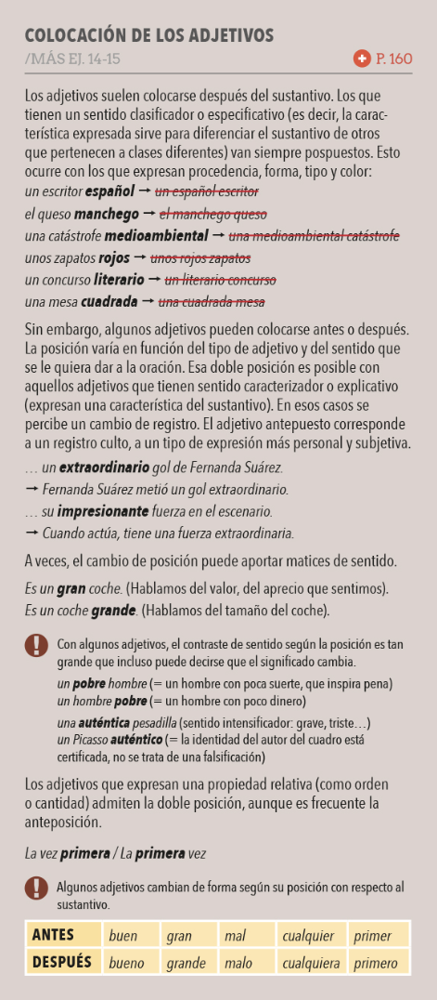
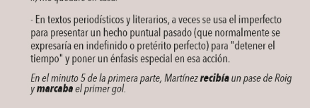
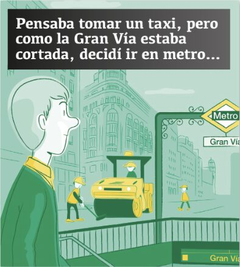
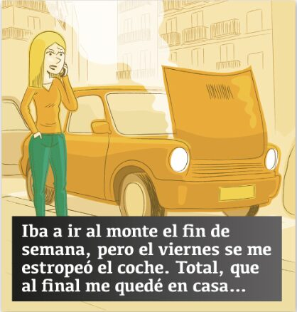

<!doctype html>
<html lang="es">
<head>
<meta charset="utf-8">
<meta name="viewport" content="width=device-width, initial-scale=1, viewport-fit=cover">
<meta name="robots" content="noindex">
<title>Clases de Español de Ilya</title>
<link rel="preconnect" href="https://fonts.googleapis.com">
<link rel="stylesheet" href="https://fonts.googleapis.com/css2?family=Bricolage+Grotesque:opsz,wght@12..96,500;12..96,700&family=Inter:wght@400;500;600&family=JetBrains+Mono:wght@500&family=Fira+Sans:ital,wght@0,300;0,400;0,600;0,700;1,400&family=Nunito:wght@400;600;700;800&family=Crimson+Pro:ital,wght@0,400;0,600;0,700;1,400&family=Fira+Sans+Condensed:ital,wght@0,400;0,700;1,400&family=Playfair+Display:ital,wght@0,900;1,900&family=Alegreya:ital,wght@0,400;0,700;1,400&display=swap">
<style>
html{-webkit-text-size-adjust:100%}
body{margin:0}
[hidden]{display:none!important}

/* Layout: cuaderno con índice lateral (lecciones) + hoja principal; en móvil el índice va arriba. */
:root{
  --bg:#F3F5F7; --surface:#FFFFFF; --ink:#17202B; --muted:#5A6675; --line:#DCE2E8;
  --accent:#0B6E6B; --accent-soft:#DDEFEE; --mark:#FBE7A6;
  --es:#B0361F; --es-soft:#F8E2DD; --la:#2A7240; --la-soft:#DEEFE2;
  --ok:#2A7240; --bad:#B0361F; --warn:#8C6200; --warn-soft:#FBF0D2;
  --f-display:"Bricolage Grotesque", "Segoe UI", system-ui, sans-serif;
  --f-body:"Inter", system-ui, -apple-system, "Segoe UI", sans-serif;
  --f-mono:"JetBrains Mono", ui-monospace, "SFMono-Regular", Menlo, monospace;
}
@media (prefers-color-scheme: dark){:root:not([data-theme="light"]){
  --bg:#0F151B; --surface:#161E26; --ink:#E5EAF0; --muted:#98A4B2; --line:#28323D;
  --accent:#53C4BE; --accent-soft:#123231; --mark:#5A4712;
  --es:#F0907A; --es-soft:#3A1F1A; --la:#82CC92; --la-soft:#163020;
  --ok:#82CC92; --bad:#F0907A; --warn:#E7BE5C; --warn-soft:#3A2F10; color-scheme:dark;
}}
:root[data-theme="dark"]{
  --bg:#0F151B; --surface:#161E26; --ink:#E5EAF0; --muted:#98A4B2; --line:#28323D;
  --accent:#53C4BE; --accent-soft:#123231; --mark:#5A4712;
  --es:#F0907A; --es-soft:#3A1F1A; --la:#82CC92; --la-soft:#163020;
  --ok:#82CC92; --bad:#F0907A; --warn:#E7BE5C; --warn-soft:#3A2F10; color-scheme:dark;
}
*{box-sizing:border-box}
body{background:var(--bg);color:var(--ink);font-family:var(--f-body);font-size:16px;line-height:1.6}
a{color:var(--accent)}
h1,h2,h3{font-family:var(--f-display);line-height:1.15;text-wrap:balance;margin:0}
:focus-visible{outline:2px solid var(--accent);outline-offset:2px;border-radius:4px}

.shell{display:grid;grid-template-columns:270px minmax(0,1fr);gap:0;min-height:100vh;max-width:1280px;margin:0 auto}
.side{border-right:1px solid var(--line);padding-block:28px;padding-left:max(20px, env(safe-area-inset-left,0px));padding-right:20px;position:sticky;top:0;align-self:start;max-height:100vh;overflow:auto}
.brand{display:block;text-decoration:none;color:var(--ink);margin-bottom:24px}
.brand b{display:block;font-family:var(--f-display);font-size:22px;letter-spacing:-.01em}
.brand span{font-size:13px;color:var(--muted)}
.navlabel{font-family:var(--f-mono);font-size:11px;letter-spacing:.08em;text-transform:uppercase;color:var(--muted);margin:20px 0 8px}
.nav{list-style:none;margin:0;padding:0;display:flex;flex-direction:column;gap:2px}
.nav a{display:grid;grid-template-columns:30px 1fr;gap:6px;padding:8px 10px;border-radius:8px;text-decoration:none;color:var(--ink);font-size:14px;line-height:1.35}
.nav a:hover{background:var(--accent-soft)}
.nav a[aria-current="page"]{background:var(--accent);color:var(--surface)}
.nav a[aria-current="page"] .n{color:var(--surface)}
.nav .n{font-family:var(--f-mono);font-size:12px;color:var(--muted);padding-top:2px}

main{padding-block:32px 80px;padding-left:max(16px, 4vw);padding-right:max(16px, env(safe-area-inset-right,0px), 4vw);min-width:0}
.wrap{max-width:780px}

.eyebrow{font-family:var(--f-mono);font-size:12px;letter-spacing:.06em;text-transform:uppercase;color:var(--muted)}
.lead{font-size:18px;color:var(--muted);max-width:62ch}

/* Home */
.home h1{font-size:clamp(34px,6vw,52px);letter-spacing:-.02em;margin:8px 0 12px}
.cards{display:grid;grid-template-columns:repeat(auto-fill,minmax(260px,1fr));gap:14px;margin-top:28px}
.card{display:flex;flex-direction:column;gap:8px;padding:18px;border:1px solid var(--line);border-radius:12px;background:var(--surface);text-decoration:none;color:var(--ink);transition:border-color .15s}
.card:hover{border-color:var(--accent)}
.card h3{font-size:20px}
.card p{margin:0;color:var(--muted);font-size:14px}
.chips{display:flex;flex-wrap:wrap;gap:6px}
.chip{font-size:12px;padding:2px 8px;border-radius:999px;background:var(--accent-soft);color:var(--accent);font-weight:500}
.legend{display:flex;flex-wrap:wrap;gap:16px;margin-top:36px;padding-top:20px;border-top:1px solid var(--line);font-size:14px;color:var(--muted);align-items:center}

/* Region badges */
.rg{display:inline-block;font-family:var(--f-mono);font-size:11px;font-weight:500;letter-spacing:.04em;padding:1px 6px;border-radius:4px;vertical-align:2px;white-space:nowrap}
.rg.es{background:var(--es-soft);color:var(--es)}
.rg.la{background:var(--la-soft);color:var(--la)}
.rg.all{background:var(--line);color:var(--muted)}

/* Lesson */
.lhead{margin-bottom:8px}
.lhead h1{font-size:clamp(30px,5vw,44px);letter-spacing:-.02em;margin:10px 0 10px}
.meta{display:flex;flex-wrap:wrap;gap:8px 18px;font-size:14px;color:var(--muted);margin-top:14px}
.meta b{color:var(--ink);font-weight:600}
.toc{position:sticky;top:env(safe-area-inset-top,0px);z-index:5;background:var(--bg);display:flex;gap:4px;overflow-x:auto;padding:10px 0;margin:24px 0 8px;border-bottom:1px solid var(--line)}
.toc a{flex:none;font-size:14px;padding:6px 12px;border-radius:999px;text-decoration:none;color:var(--muted)}
.toc a:hover{color:var(--ink);background:var(--accent-soft)}
section.blk{padding-top:36px;scroll-margin-top:64px}
section.blk>h2{font-size:26px;margin-bottom:14px;display:flex;gap:12px;align-items:baseline}
section.blk>h2 .k{font-family:var(--f-mono);font-size:13px;color:var(--accent);font-weight:500}
.goals{margin:0;padding-left:20px}
.goals li{margin:4px 0}

.reading{background:var(--surface);border:1px solid var(--line);border-radius:12px;padding:24px clamp(18px,4vw,32px)}
.reading h3{font-size:22px;margin-bottom:12px}
.reading p{margin:0 0 12px;max-width:66ch}
mark{background:var(--mark);color:inherit;padding:0 2px;border-radius:3px}
.note{display:flex;gap:10px;font-size:14px;padding:12px 14px;border-radius:10px;background:var(--accent-soft);margin-top:14px}
.note b{white-space:nowrap}

.tscroll{position:relative;overflow-x:auto;border:1px solid var(--line);border-radius:12px;background:var(--surface)}
table{border-collapse:collapse;width:100%;font-size:15px}
th,td{text-align:left;padding:10px 14px;border-bottom:1px solid var(--line);vertical-align:top}
tr:last-child td{border-bottom:0}
th{font-family:var(--f-mono);font-size:11px;letter-spacing:.06em;text-transform:uppercase;color:var(--muted);font-weight:500;background:var(--bg)}
td.term{font-weight:600;white-space:nowrap}
td .alt{display:block;font-weight:400;font-size:14px;color:var(--muted);white-space:normal;margin-top:2px}
td.ex{color:var(--muted);font-style:italic;min-width:220px}

.gram p{max-width:66ch}
.gram h3{font-size:19px;margin:22px 0 8px}
.rule{display:grid;grid-template-columns:minmax(0,1fr);gap:4px;padding:14px 16px;border-left:3px solid var(--accent);background:var(--surface);border-radius:0 10px 10px 0;margin:10px 0}
.rule .ex{font-style:italic;color:var(--muted)}

.vs{display:grid;grid-template-columns:repeat(auto-fit,minmax(220px,1fr));gap:10px}
.vs .row{background:var(--surface);border:1px solid var(--line);border-radius:10px;padding:12px 14px;display:flex;flex-direction:column;gap:6px}
.vs .topic{font-size:13px;color:var(--muted)}
.vs .pair{display:flex;flex-direction:column;gap:4px}
.vs .tip{font-size:13px;color:var(--muted)}

/* Exercises */
.ex-block{background:var(--surface);border:1px solid var(--line);border-radius:12px;padding:20px clamp(16px,3vw,26px);margin-bottom:16px}
.ex-block h3{font-size:19px;margin-bottom:4px}
.ex-block .instr{color:var(--muted);font-size:14px;margin:0 0 14px}
.items{list-style:none;margin:0;padding:0;display:flex;flex-direction:column;gap:14px;counter-reset:it}
.items>li{counter-increment:it;display:grid;grid-template-columns:26px minmax(0,1fr);gap:6px}
.items>li::before{content:counter(it) ".";font-family:var(--f-mono);font-size:13px;color:var(--muted);padding-top:3px}
.gap{font:inherit;font-size:15px;width:9.5em;max-width:100%;padding:2px 8px;border:0;border-bottom:2px solid var(--line);background:var(--bg);color:var(--ink);border-radius:4px 4px 0 0}
.gap:focus{border-bottom-color:var(--accent);outline:none}
.gap.ok{border-bottom-color:var(--ok)}
.gap.bad{border-bottom-color:var(--bad)}
.gap.warn{border-bottom-color:var(--warn)}
.fb{display:block;font-size:13px;margin-top:4px}
.fb.ok{color:var(--ok)} .fb.bad{color:var(--bad)} .fb.warn{color:var(--warn)}
.opts{display:flex;flex-wrap:wrap;gap:8px;margin-top:8px}
.opt{font:inherit;font-size:14px;padding:7px 12px;border:1px solid var(--line);border-radius:8px;background:var(--bg);color:var(--ink);cursor:pointer;text-align:left}
.opt:hover{border-color:var(--accent)}
.opt.ok{border-color:var(--ok);background:var(--la-soft);color:var(--ok)}
.opt.bad{border-color:var(--bad);background:var(--es-soft);color:var(--bad)}
textarea{font:inherit;font-size:15px;width:100%;min-height:70px;padding:10px 12px;border:1px solid var(--line);border-radius:8px;background:var(--bg);color:var(--ink);resize:vertical;margin-top:8px}
.model{margin-top:8px;padding:10px 12px;border-radius:8px;background:var(--accent-soft);font-size:14px}
.bar{display:flex;flex-wrap:wrap;align-items:center;gap:10px;margin-top:18px}
.btn{font:inherit;font-size:14px;font-weight:600;padding:8px 16px;border-radius:8px;border:1px solid var(--accent);background:var(--accent);color:var(--surface);cursor:pointer}
.btn.ghost{background:transparent;color:var(--accent)}
.score{font-family:var(--f-mono);font-size:13px;color:var(--muted)}
.speak{margin:0;padding-left:20px}
.speak li{margin:8px 0;max-width:66ch}
.hw{background:var(--warn-soft);border-radius:12px;padding:18px 22px}
.hw p{margin:0 0 8px}

/* Glossary */
.filters{display:flex;flex-wrap:wrap;gap:8px;margin:18px 0}
.filters input{font:inherit;font-size:15px;padding:8px 12px;border:1px solid var(--line);border-radius:8px;background:var(--surface);color:var(--ink);flex:1 1 220px;min-width:0}
.fbtn{font:inherit;font-size:14px;padding:8px 14px;border-radius:8px;border:1px solid var(--line);background:var(--surface);color:var(--ink);cursor:pointer}
.fbtn[aria-pressed="true"]{border-color:var(--accent);background:var(--accent-soft);color:var(--accent);font-weight:600}
.empty{color:var(--muted);padding:20px 0}
.mw td{padding:6px 8px}
.mwi{font:inherit;font-size:15px;width:100%;min-width:120px;padding:6px 8px;border:1px solid transparent;border-radius:6px;background:var(--bg);color:var(--ink)}
.mwi:focus{border-color:var(--accent);outline:none}
.del{font:inherit;font-size:18px;line-height:1;width:32px;height:32px;border:0;border-radius:6px;background:transparent;color:var(--muted);cursor:pointer}
.del:hover{background:var(--es-soft);color:var(--bad)}
.rg.mine{background:var(--mark);color:var(--ink)}
.dropzone{border:2px dashed var(--line);border-radius:12px;padding:14px 16px;margin-bottom:10px;color:var(--muted);font-size:14px;text-align:center;transition:border-color .15s, background .15s}
.dropzone.over{border-color:var(--accent);background:var(--accent-soft);color:var(--accent)}
tr.drag{cursor:grab}
tr.drag:active{cursor:grabbing}
.emptybox{display:flex;flex-direction:column;gap:6px;margin-top:28px;padding:24px;border:2px dashed var(--line);border-radius:12px;color:var(--muted);max-width:62ch}
.emptybox b{color:var(--ink);font-family:var(--f-display);font-size:20px}
.navempty{font-size:14px;color:var(--muted);padding:6px 10px}
.story p{margin:0 0 14px;line-height:2.3;max-width:70ch}
.story .tm{color:var(--es);font-weight:600}
.tg{white-space:nowrap}
.tg sup{font-family:var(--f-mono);font-size:10px;color:var(--muted);margin-right:2px}
.tgi{width:7.5em;line-height:1.4;padding:1px 6px;font-size:15px}
.tgi.ok{background:var(--la-soft);color:var(--ok);font-weight:600}
.tgi.bad{background:var(--es-soft);color:var(--bad);text-decoration:line-through;text-decoration-thickness:1px}
.tg .inf{font-size:13px;font-style:italic;color:var(--muted);margin-left:4px}
.tg .sol{font-size:13px;font-weight:600;color:var(--ok);margin-left:4px}
.ch{font-size:18px;margin:22px 0 10px}
.blk>h3.ch:first-of-type{margin-top:0}
td.grp{font-family:var(--f-mono);font-size:12px;letter-spacing:.06em;color:var(--accent);background:var(--accent-soft)}
.reading .src{font-size:13px;color:var(--muted);font-style:italic}
.quotes{display:grid;grid-template-columns:repeat(auto-fit,minmax(220px,1fr));gap:10px;margin:0 0 16px}
.quotes blockquote{margin:0;padding:12px 14px;border-radius:10px;background:var(--bg);font-weight:600;font-size:15px}
.items small{display:block;color:var(--muted);font-size:13px;margin-top:4px;line-height:1.5}
/* ====== Estilos de los materiales originales ====== */
.topic{font-family:var(--f-display);font-size:20px;font-weight:700;color:var(--accent);margin:0 0 6px}
.nav .nt{display:block;font-size:12px;opacity:.75;margin-top:1px}
figure.orig{margin:0 0 12px}
figure.orig img{display:block;width:100%;height:auto;border-radius:6px;box-shadow:0 2px 14px rgba(0,0,0,.12)}
details.txt{margin:0 0 14px}
details.txt summary{cursor:pointer;color:var(--accent);font-weight:600;font-size:14px;padding:6px 0}
details.txt .reading{margin-top:8px}

/* Aula: Intenciones y acciones interrumpidas */
.ex-block.aula{--au-red:#D52B26;--au-bg:#EAE5E1;--au-ink:#2B2B2B;--au-line:#C9BFB8;background:var(--au-bg);color:var(--au-ink);border:0;border-radius:4px;font-family:"Fira Sans",var(--f-body);padding:0 clamp(16px,3vw,28px) 22px;overflow:hidden;color-scheme:light}
.ex-block.aula:not(:has(.band)){padding-top:18px}
.aula .band{position:relative;background:var(--au-red);color:#fff;font-weight:300;font-size:clamp(20px,3.4vw,30px);padding:14px 120px 14px clamp(16px,3vw,28px);margin:0 calc(-1 * clamp(16px,3vw,28px)) 22px;clip-path:polygon(0 0,100% 0,calc(100% - 50px) 100%,0 100%);letter-spacing:.005em}
.aula .ah{font-family:"Fira Sans",var(--f-body);font-size:18px;font-weight:600;display:flex;align-items:center;gap:10px;padding-bottom:6px;border-bottom:1px solid #7a7a7a;margin-bottom:14px;color:var(--au-ink)}
.aula .pill{display:inline-grid;place-items:center;min-width:34px;height:22px;border-radius:11px;background:var(--au-red);color:#fff;font-size:13px;font-weight:700}
.aula .instr{color:var(--au-ink);font-size:15px}
.aula .let{color:var(--au-red)}
.aula .items>li::before{color:var(--au-ink);font-family:"Fira Sans",var(--f-body);font-weight:700}
.aula textarea,.aula select{background:#fff;color:var(--au-ink);border:1px solid #d8d2cd;border-radius:0}
.aula .model{background:#fff;border-left:3px solid var(--au-red);border-radius:0;color:var(--au-ink)}
.aula .btn{background:var(--au-red);border-color:var(--au-red);color:#fff;border-radius:3px;font-family:"Fira Sans",var(--f-body)}
.aula .btn.ghost{background:transparent;color:var(--au-red)}
.aula .score{color:#6b6460}
.aula .fb.ok{color:#2e7d32}.aula .fb.bad{color:var(--au-red)}.aula .fb.warn{color:#9a6b00}
.aula .opts{flex-direction:column;gap:6px;margin-top:10px}
.aula .opt{background:transparent;border:0;padding:2px 0;display:flex;gap:10px;align-items:flex-start;color:var(--au-ink);font-size:15px}
.aula .opt::before{content:"";flex:none;width:16px;height:16px;margin-top:2px;border:1.5px solid #555;border-radius:50%;background:#fff}
.aula .opts.multi .opt::before{border-radius:3px;border-color:#999}
.aula .opt[aria-pressed="true"]::before{background:radial-gradient(circle,var(--au-red) 0 40%,#fff 45%);border-color:var(--au-red)}
.aula .opts.multi .opt[aria-pressed="true"]::before{background:#fde3e1;content:"✔";color:var(--au-red);font-size:12px;line-height:14px;text-align:center}
.aula .opt.ok{color:#2e7d32;background:transparent}.aula .opt.bad{color:var(--au-red);background:transparent;text-decoration:line-through}
.aula .items{gap:0}
.aula .items>li{padding:12px 0;border-top:1px solid var(--au-line)}
.aula .items>li:last-child{border-bottom:1px solid var(--au-line)}
.aula:has(textarea) .items>li{border:0;padding:6px 0}
.pics2{display:flex;flex-wrap:wrap;gap:16px;margin:0 0 14px}
.pics2 img{min-width:0;flex:1 1 220px;max-width:280px;border:4px solid #fff;box-shadow:0 1px 4px rgba(0,0,0,.25)}
.panels{display:grid;grid-template-columns:repeat(3,minmax(0,1fr));border:6px solid #7a7a7a;background:#7a7a7a;gap:4px;margin-bottom:14px}
.panel{margin:0;position:relative;background:#fff}
.panel img{display:block;width:100%;height:auto}
.panel select{position:absolute;left:8px;bottom:8px;width:52px;height:40px;font-size:20px;text-align:center;border:0;color:var(--au-red)}
.panel select.ok{outline:3px solid #2e7d32}.panel select.bad{outline:3px solid var(--au-red)}
.sent{margin:0;padding-left:22px}.sent li{margin:4px 0}.sent li::marker{font-weight:700}
.t3 table{background:transparent;font-size:15px}
.t3 th{background:#DCC5BB;color:var(--au-ink);font-family:"Fira Sans",var(--f-body);font-weight:700;font-size:13px;letter-spacing:.02em}
.t3 td{background:#E5D8D1;border:3px solid var(--au-bg);min-width:170px;width:33%}
.t3 td.in textarea{margin:0;min-height:90px}
.t3.tscroll{border:0;background:transparent;border-radius:0}

/* Libro: Manco Cápac / Harlem */
.ex-block.libro{font-family:"Nunito",var(--f-body);background:#FBFAF7;color:#3a3a3a;border-color:#e6e1da;color-scheme:light}
.libro h3{font-family:"Nunito",var(--f-body);font-weight:700;font-size:18px;color:#222;line-height:1.35}
.libro .bn{color:#8a3324;font-weight:800}
.libro .instr:empty{display:none}
.lchips{display:flex;flex-wrap:wrap;gap:8px;margin:6px 0 16px}
.lchips span{background:#DFC3B8;color:#3a2a25;padding:3px 9px;font-size:15px}
.libro .items>li::before{font-family:"Nunito",var(--f-body);font-weight:800;color:#222}
.libro textarea{background:transparent;border:0;border-bottom:1px dotted #999;border-radius:0;color:#333}
.libro .model{background:#F1E6E1;border-radius:0;color:#333}
.libro .btn{background:#8a3324;border-color:#8a3324;color:#fff}.libro .btn.ghost{background:transparent;color:#8a3324}
.libro .items b{font-weight:800}

/* Ficha: pretérito indefinido */
.ficha{--fg-green:#1F6B45;--fg-soft:#E3EFE7;--fg-ink:#1E3B2C;font-family:"Nunito",var(--f-body);color:var(--fg-ink);background:#F3F8F4;border-radius:14px;padding:clamp(12px,2.5vw,22px);display:flex;flex-direction:column;gap:14px;color-scheme:light}
.fhead{background:linear-gradient(135deg,#1C6440,#2E8B57);color:#fff;border-radius:12px;padding:16px 22px}
.fhead b{display:block;font-size:clamp(24px,4.5vw,34px);font-weight:800;letter-spacing:.01em}
.fhead span{font-size:14px;opacity:.9}
.fcard{background:#fff;border:1px solid #D6E6DC;border-radius:12px;padding:14px 16px;min-width:0}
.fcard h4{margin:0 0 10px;font-size:16px;font-weight:800;padding-left:10px;border-left:4px solid var(--fg-green)}
.fcard p{margin:0 0 8px;font-size:14px}
.fchips{display:flex;flex-wrap:wrap;justify-content:center;gap:8px}
.fchips span{background:var(--fg-soft);border-radius:999px;padding:4px 14px;font-size:14px;font-weight:600}
.fmark{display:grid;grid-template-columns:repeat(auto-fit,minmax(240px,1fr));gap:2px 14px}
.fmark div{display:flex;justify-content:space-between;gap:10px;padding:3px 10px;font-size:14px}
.fmark div:nth-child(4n+1),.fmark div:nth-child(4n+2){background:var(--fg-soft)}
.fmark span{color:#5b6b62;font-size:13px;text-align:right}
.fgrid{display:grid;grid-template-columns:repeat(auto-fit,minmax(270px,1fr));gap:14px}
table.fverbs{font-size:14px;border-collapse:collapse;width:100%}
.fverbs th{background:var(--fg-soft);color:var(--fg-ink);font-family:"Nunito",var(--f-body);font-size:13px;letter-spacing:0;text-transform:none;font-weight:700;padding:5px 8px}
.fverbs td{padding:3px 8px;border:0;color:var(--fg-ink)}
.fverbs tr:nth-child(even) td{background:#F5FAF6}
.fverbs u{text-decoration:none;background:#FBE3C4;border-radius:3px}
.fverbs i{font-style:normal;background:#CFE8D6;border-radius:3px}
.fverbs em{font-style:normal;font-weight:800;text-decoration:underline;text-decoration-color:var(--fg-green);text-decoration-thickness:3px;text-underline-offset:3px}
.fojo{display:flex;gap:12px;align-items:center;background:var(--fg-soft);border-radius:10px;padding:10px 12px;margin-top:10px;font-size:13px}
.fojo b{background:var(--fg-green);color:#fff;border-radius:8px;padding:8px 10px}
.fvow{display:flex;align-items:center;gap:12px;background:var(--fg-soft);border-radius:10px;padding:8px 12px;margin:12px 0 6px}
.fvow b{font-size:20px;color:var(--fg-green)}
.fvow span{font-size:12px;color:#5b6b62}
.ffoot{text-align:center;font-size:12px;letter-spacing:.08em;color:#5b6b62}

/* Hoja: Urashima Tarō */
.sheet{background:#fff;color:#262626;font-family:"Crimson Pro",Georgia,serif;font-size:18px;border:1px solid #e5e5e5;border-radius:2px;box-shadow:0 2px 18px rgba(0,0,0,.08);padding:clamp(18px,5vw,54px);color-scheme:light;margin-top:12px}
.sheet .sh{font-family:"Crimson Pro",Georgia,serif;font-weight:700;font-size:clamp(26px,4.4vw,36px);display:flex;align-items:center;gap:14px;color:#262626}
.sheet .dot{flex:none;width:.8em;height:.8em;border-radius:50%;background:#A61E22}
.sheet .shs{font-style:italic;margin:6px 0 18px;padding-bottom:10px;border-bottom:1.5px solid #A61E22}
.sheet p{line-height:2.1}
.story.sheet .tm{color:#A61E22;font-weight:700}
.sheet .tg sup{color:#A61E22;font-family:"Crimson Pro",Georgia,serif;font-size:11px}
.sheet .tgi{font-family:"Crimson Pro",Georgia,serif;font-size:17px;background:#EBF2F3;color:#262626;border:0;border-bottom:1.5px solid #888;border-radius:0;width:7em}
.sheet .tgi.ok{background:#E3F1E5;color:#1f6b33;border-bottom-color:#2e7d32}
.sheet .tgi.bad{background:#F8E1E0;color:#A61E22;border-bottom-color:#A61E22}
.sheet .tg .inf{font-family:"Crimson Pro",Georgia,serif;font-size:15px;color:#8a8a8a}
.sheet .btn{background:#A61E22;border-color:#A61E22;color:#fff;font-family:var(--f-body)}
.sheet .btn.ghost{background:transparent;color:#A61E22}
.sheet .score{color:#6b6b6b}
@media (max-width:600px){.panels{grid-template-columns:minmax(0,1fr)}.aula .band{padding-right:70px}}
.gday{margin-top:10px;border:1px solid var(--line);border-radius:12px;background:var(--surface)}
.gday summary{cursor:pointer;list-style:none;display:flex;flex-wrap:wrap;align-items:baseline;gap:4px 14px;padding:16px 18px}
.gday summary::-webkit-details-marker{display:none}
.gday summary::before{content:"▸";color:var(--accent);transition:transform .15s}
.gday[open] summary::before{transform:rotate(90deg)}
.gday summary b{font-family:var(--f-display);font-size:22px}
.gday summary span{font-size:14px;color:var(--muted)}
.gday summary em{margin-left:auto;font-style:normal;font-family:var(--f-mono);font-size:12px;color:var(--muted)}
.gday .tscroll{border:0;border-top:1px solid var(--line);border-radius:0 0 12px 12px}
.glink{margin:0;padding:10px 14px;font-size:14px}
.addw{margin:22px 0 6px;padding:16px 18px;border:1px solid var(--line);border-radius:12px;background:var(--surface)}
.addw h2{font-size:18px;margin:0 0 10px}
.addw .row{display:grid;grid-template-columns:minmax(0,1.1fr) minmax(0,1fr) minmax(0,1fr) minmax(0,1.4fr);gap:8px}
.addw select,.addw input{font:inherit;font-size:15px;padding:9px 10px;border:1px solid var(--line);border-radius:8px;background:var(--bg);color:var(--ink);min-width:0;width:100%;box-sizing:border-box}
.addw .bar{margin-top:10px}
.addw .note{margin:8px 0 0;font-size:13px;color:var(--muted)}
.mine{display:inline-block;margin-left:6px;padding:1px 7px;border-radius:999px;font-size:11px;font-family:var(--f-mono);background:var(--accent-soft);color:var(--accent);vertical-align:middle}
.gdel{float:right;border:0;background:none;color:var(--muted);font-size:18px;line-height:1;cursor:pointer;padding:2px 6px}
.gdel:hover{color:var(--accent)}
@media (max-width:640px){.addw .row{grid-template-columns:1fr}}
/* Clase 27 nov */
.gcard{display:grid;grid-template-columns:minmax(0,1fr) minmax(0,1.15fr);gap:20px;align-items:start;margin-bottom:22px}
@media (max-width:760px){.gcard{grid-template-columns:minmax(0,1fr)}}
.shot{margin:0}
.shot img{display:block;width:100%;max-width:480px;height:auto;border-radius:4px;box-shadow:0 1px 8px rgba(0,0,0,.15)}
.expl{background:var(--surface);border:1px solid var(--line);border-radius:12px;padding:16px 20px;font-size:15px}
.expl h3{font-size:18px;margin-bottom:8px}
.expl p{margin:0 0 10px}
.expl ul{margin:0 0 10px;padding-left:20px}
.expl li{margin:4px 0}
.aula-box{background:#DCD3D4;color:#2d2a2a;font-family:"Fira Sans Condensed","Fira Sans",var(--f-body);font-size:15.5px;line-height:1.45;padding:22px 22px 14px;border-radius:2px;color-scheme:light;max-width:480px}
.aula-box h4{margin:0 0 12px;font-size:21px;font-weight:700;letter-spacing:.01em;color:#3b3838}
.aula-box p{margin:0 0 10px}
.aula-box .exs{font-size:15px}
.adj-legend{display:flex;flex-wrap:wrap;gap:8px 18px;font-size:14px;color:var(--muted);margin-bottom:14px}
.aj{font-style:normal;border-radius:3px;padding:0 2px;font-weight:600;box-decoration-break:clone;-webkit-box-decoration-break:clone}
.aj.a{background:#FFD8A8;color:#7a3e00}
.aj.c{background:#C9E3FF;color:#0b3f78}
.aj.d{background:#D6F0C8;color:#245c12}
.aj.s{background:#EBD5FA;color:#5a2380}
.noticia{max-width:560px;background:#F5F5F3;color:#1d1d1d;box-shadow:0 2px 12px rgba(0,0,0,.18);font-family:"Alegreya",Georgia,serif;color-scheme:light;margin-bottom:14px}
.nbar{background:#3D86C6;color:#fff;display:flex;align-items:center;gap:12px;padding:8px 14px}
.nbar b{font-family:"Playfair Display",Georgia,serif;font-style:italic;font-weight:900;font-size:24px}
.nmenu{width:20px;height:14px;border-top:2px solid #fff;border-bottom:2px solid #fff;position:relative}
.nmenu::after{content:"";position:absolute;left:0;right:0;top:4px;border-top:2px solid #fff}
.nbody{padding:14px 16px 10px}
.nsec{font-size:12px;font-weight:700;margin-bottom:2px}
.ntit{font-family:"Playfair Display",Georgia,serif;font-weight:900;font-size:clamp(30px,6vw,40px);line-height:1.05;margin:0 0 8px;color:#111}
.noticia p{text-align:justify;hyphens:auto;font-size:15.5px;line-height:1.5;margin:0 0 10px}
.ndrop::first-letter{float:left;font-family:"Playfair Display",Georgia,serif;font-size:58px;line-height:.85;padding:4px 6px 0 0}
.nfoto{margin:6px 0 12px}
.nfoto img{display:block;width:100%;height:auto}
.nsrc{text-align:right!important;font-size:12px!important}
.sr{position:absolute;width:1px;height:1px;overflow:hidden;clip:rect(0 0 0 0)}

@media (max-width:860px){
  .shell{grid-template-columns:minmax(0,1fr)}
  .side{position:static;max-height:none;border-right:0;border-bottom:1px solid var(--line);padding-block:18px;padding-left:max(16px, env(safe-area-inset-left,0px));padding-right:max(16px, env(safe-area-inset-right,0px))}
  .brand{margin-bottom:8px}
  .nav{flex-direction:row;overflow-x:auto;gap:6px;padding-bottom:4px}
  .nav a{flex:none;max-width:240px}
  .navlabel{margin-top:12px}
  main{padding-left:max(16px, env(safe-area-inset-left,0px));padding-right:max(16px, env(safe-area-inset-right,0px))}
}
@media (max-width:600px){td.term{white-space:normal}th,td{padding:10px}}
@media (prefers-reduced-motion: reduce){*{transition:none!important;scroll-behavior:auto!important}}
</style>
</head>
<body>
<div class="shell">
  <aside class="side">
    <a class="brand" href="#inicio"><b>Clases de Español</b><span>Lecciones de Ilya</span></a>
    <div class="navlabel">Lecciones</div>
    <ul class="nav" id="nav-lessons"></ul>
    <div class="navlabel">Deberes</div>
    <ul class="nav" id="nav-deberes"></ul>
    <div class="navlabel">Herramientas</div>
    <ul class="nav">
      <li><a href="#glosario" data-route="glosario"><span class="n">Aa</span><span>Glosario por fechas</span></a></li>
    </ul>
  </aside>
  <main id="view" tabindex="-1"></main>
</div>

<script>
/* =====================================================================
   LECCIONES
   Cada lección es un objeto en este array. Para añadir una nueva,
   sigue la estructura de plantilla-leccion.js.
   Regiones: "all" (general), "es" (España), "la" (Latinoamérica);
   en "label" se puede precisar el país: { r:"la", label:"MX" }.
   ===================================================================== */
const LESSONS = [
{
  id: "leccion-2026-11-27",
  num: 2,
  date: "2026-11-27",
  title: "27 de noviembre",
  topic: "La colocación de los adjetivos y los tiempos de la noticia",
  subtitle: "Dónde va el adjetivo (antes o después del sustantivo), el imperfecto periodístico y el presente histórico. Texto: «Terrible terremoto en Japón».",
  sections: [
    { id:"gramatica", title:"Gramática", html:`
      <div class="gcard">
        <figure class="shot"></figure>
        <div class="expl">
          <p>По умолчанию прилагательное стоит <b>после</b> существительного (<i>posposición</i>).</p>
          <p><b>Всегда после</b> стоят классифицирующие прилагательные (<i>adjetivos especificativos / clasificadores</i>). Они отделяют предмет от других: происхождение (<i>procedencia</i>), форма, тип, цвет. <i>Un escritor español, una mesa cuadrada, un reactor nuclear.</i></p>
          <p>Описательные прилагательные (<i>adjetivos explicativos / caracterizadores</i>) могут стоять и <b>перед</b> существительным (<i>anteposición</i>). Тогда фраза звучит книжно, субъективно, эмоционально (<i>registro culto</i>): <i>un extraordinario gol</i>.</p>
          <p>У некоторых прилагательных место <b>меняет смысл</b>:</p>
          <ul>
            <li><i>un gran coche</i> — отличная машина (оценка) · <i>un coche grande</i> — большая машина (размер);</li>
            <li><i>un pobre hombre</i> — несчастный · <i>un hombre pobre</i> — бедный, без денег;</li>
            <li><i>una auténtica pesadilla</i> — настоящий кошмар (усиление) · <i>un Picasso auténtico</i> — подлинный.</li>
          </ul>
          <p>Порядок и количество (<i>propiedad relativa</i>) обычно ставим <b>перед</b>: <i>la primera vez, el quinto terremoto</i>.</p>
          <p>Перед существительным в ед. ч. часть прилагательных сокращается (<i>apócope</i>): <i>buen, mal, primer, cualquier</i>; <i>gran</i> — перед любым родом.</p>
        </div>
      </div>
      <div class="gcard">
        <figure class="shot"></figure>
        <div class="expl">
          <h3>Imperfecto periodístico (<i>imperfecto narrativo</i>)</h3>
          <p>В газетах и литературе <i>imperfecto</i> иногда ставят вместо <i>indefinido</i>, хотя действие однократное и завершённое. Это приём: время как будто «останавливается» (<i>detener el tiempo</i>), и момент выделяется, как в замедленной съёмке.</p>
          <p><i>Martínez <b>recibía</b> un pase de Roig y <b>marcaba</b> el primer gol</i> = <i>recibió … y marcó</i>: получил пас и забил.</p>
          <p>Чаще всего встречается в спортивных репортажах, хрониках и новостях с точным указанием времени (<i>en el minuto 5, a las 14:46</i>).</p>
        </div>
      </div>
      <div class="gcard">
        <div class="aula-box">
          <h4>PRESENTE HISTÓRICO</h4>
          <p>En las noticias, las crónicas y las biografías se usa a menudo el presente para contar hechos pasados. Así el relato se vuelve más vivo y el lector «vive» el momento.</p>
          <p class="exs"><i>14:46 h. <b>Comienza</b> la catástrofe. La gente <b>regresa</b> al trabajo tras la hora del almuerzo. En Tokio las mesas <b>se empiezan</b> a deslizar, los edificios <b>se tambalean</b>…</i></p>
          <p class="exs"><i>Colón <b>llega</b> a América en 1492.</i></p>
        </div>
        <div class="expl">
          <h3>Presente histórico</h3>
          <p>Настоящее время (<i>presente</i>) для событий прошлого. Рассказ становится живым и драматичным, читатель как будто сам переносится в момент события. Типично для новостей, хроник (<i>crónica</i>), биографий и исторических текстов.</p>
          <p>В тексте про Японию видны три времени:</p>
          <ul>
            <li><i>Japón <b>ha sufrido</b> este viernes…</i> — <i>pretérito perfecto</i>: свежая новость, «сегодня».</li>
            <li><i>Las noticias apocalípticas <b>empezaron</b> a llegar…</i> — <i>pretérito indefinido</i>: обычный рассказ о прошлом.</li>
            <li><i>14:46 h. <b>Comienza</b> la catástrofe…</i> — <i>presente histórico</i>: самый драматичный момент, «здесь и сейчас».</li>
          </ul>
        </div>
      </div>` }
  ],
  readings: [
    { title:"Terrible terremoto en Japón", html:`
      <div class="adj-legend">
        <span><i class="aj a">antes</i> antepuesto: valoración, orden (<i>terrible, mayor, quinto</i>)</span>
        <span><i class="aj c">después</i> clasificador: tipo, origen (<i>nuclear, petroquímica</i>)</span>
        <span><i class="aj d">después</i> descriptivo (<i>tensa, gigantesca, masiva</i>)</span>
        <span><i class="aj s">más / mejor</i> comparativo y superlativo</span>
      </div>
      <article class="noticia">
        <div class="nbar"><span class="nmenu" aria-hidden="true"></span><b>Las noticias</b></div>
        <div class="nbody">
          <div class="nsec">Internacional</div>
          <h3 class="ntit"><span class="aj a">Terrible</span> terremoto en Japón</h3>
          <p class="ndrop">De repente, tras la calma <span class="aj d">tensa</span> <span class="aj d">posterior</span> a la conmoción, las noticias <span class="aj d">apocalípticas</span> empezaron a llegar, una tras otra, <span class="aj s">a cada cual más grave</span>. Un tren de pasajeros totalmente <span class="aj d">desaparecido</span> después de ser arrollado por una ola <span class="aj d">gigantesca</span> junto a la costa; conductores <span class="aj d">desesperados</span> huyendo de una lengua de agua de 10 metros de altura, algunos de ellos sin éxito; entre 200 y 300 cuerpos sin vida <span class="aj d">desperdigados</span> por la playa de Sendai, la ciudad <span class="aj s">más afectada</span> por el tsunami; una planta <span class="aj c">petroquímica</span> ardiendo; un reactor <span class="aj c">nuclear</span> cuyo fallo en el sistema de refrigeración obligaba a declarar el estado de emergencia <span class="aj c">nuclear</span> y a evacuar a 3000 personas en un radio de dos kilómetros. Y así, hasta el infinito.</p>
          <figure class="nfoto"></figure>
          <p>Japón ha sufrido este viernes su <span class="aj a">mayor</span> terremoto en 140 años, el <span class="aj a">quinto</span> <span class="aj s">más fuerte</span> del mundo. Unos 500 desaparecidos y 350 muertos <span class="aj d">confirmados</span> por la Policía a <span class="aj a">última</span> hora de este viernes. Más de 1000 fallecidos, según la agencia de noticias Kyodo. 14:46 h. Comienza la catástrofe. La gente regresa al trabajo tras la hora del almuerzo. En Tokio las mesas se empiezan a deslizar, los edificios se tambalean como flanes, la gente se marea y pierde el equilibrio. Pronto el pánico se apodera de la capital de Japón, una megaurbe de 36 millones de personas. Pero Tokio es la ciudad <span class="aj s">mejor preparada</span> del mundo contra los terremotos y apenas se desploman un puñado de edificios.</p>
          <p>A 400 kilómetros al noreste de la capital, en las prefecturas de Miyagi y Fukushima, la situación es mucho <span class="aj s">más dramática</span>. El terremoto, de 8,9 grados de magnitud, ha tenido el epicentro a 130 kilómetros de sus costas, en el océano <span class="aj c">Pacífico</span>, a una profundidad de 26 kilómetros. El <span class="aj a">terrible</span> temblor pronto origina un tsunami que se retroalimenta cuanto más se acerca a la costa y es este último, más que el terremoto, la causa de la destrucción <span class="aj d">masiva</span>.</p>
          <p class="nsrc">(<i>Fuente:</i> Público)</p>
        </div>
      </article>
      <div class="note"><b>Fíjate:</b><span>casi todos los adjetivos van después del sustantivo. Los que van antes son de valoración (<i>terrible</i>) o de orden y cantidad (<i>mayor, quinto, última</i>). Los clasificadores (<i>nuclear, petroquímica, Pacífico</i>) nunca pueden ir delante.</span></div>` }
  ],
  vocab: [
    { term:"el terremoto / el temblor / el seísmo", ru:"землетрясение", ex:"El terrible temblor pronto origina un tsunami." },
    { term:"la conmoción", ru:"потрясение, шок", ex:"La calma tensa posterior a la conmoción." },
    { term:"a cada cual más (grave)", ru:"одно хуже (серьёзнее) другого", ex:"Las noticias llegaban, a cada cual más grave." },
    { term:"arrollar", ru:"сбить, снести (о потоке, машине)", ex:"Un tren arrollado por una ola gigantesca." },
    { term:"una lengua de agua", ru:"язык (вал) воды", ex:"Huyendo de una lengua de agua de 10 metros." },
    { term:"desperdigado", ru:"разбросанный", ex:"Cuerpos desperdigados por la playa." },
    { term:"arder", ru:"гореть", ex:"Una planta petroquímica ardiendo." },
    { term:"el fallo", ru:"сбой, неисправность", ex:"Un fallo en el sistema de refrigeración." },
    { term:"evacuar", ru:"эвакуировать", ex:"Evacuar a 3000 personas." },
    { term:"el / la fallecido/a", ru:"погибший, умерший", ex:"Más de 1000 fallecidos." },
    { term:"deslizarse", ru:"скользить, съезжать", ex:"Las mesas se empiezan a deslizar." },
    { term:"tambalearse", ru:"шататься", ex:"Los edificios se tambalean como flanes." },
    { term:"marearse", ru:"почувствовать головокружение", ex:"La gente se marea y pierde el equilibrio." },
    { term:"apoderarse de", ru:"овладеть, охватить", ex:"El pánico se apodera de la capital." },
    { term:"la megaurbe", ru:"мегаполис", ex:"Una megaurbe de 36 millones de personas." },
    { term:"desplomarse", ru:"рухнуть, обрушиться", ex:"Apenas se desploman un puñado de edificios." },
    { term:"un puñado de", ru:"горстка, несколько", ex:"Un puñado de edificios." },
    { term:"retroalimentarse", ru:"самоусиливаться", ex:"Un tsunami que se retroalimenta." },
    { term:"un pobre hombre / un hombre pobre", ru:"несчастный человек / бедный человек", ex:"Gramática: el sentido cambia con la posición." },
    { term:"un gran coche / un coche grande", ru:"отличная машина / большая машина", ex:"Gramática: el sentido cambia con la posición." }
  ]
},
{
  id: "leccion-1",
  num: 1,
  date: "2026-11-23",
  title: "23 de noviembre",
  topic: "Intenciones y acciones interrumpidas",
  subtitle: "Iba a, pensaba, quería + infinitivo; justo cuando, acababa de, estar a punto de; los marcadores temporales del relato y el pretérito indefinido irregular.",
  themes: ["leyendas", "historia de un barrio", "planes que no salen"],
  grammar: {
    intro: "Para contar una intención que no se cumplió usamos el imperfecto. Después explicamos qué pasó y cuál fue la consecuencia: <b>intención + causa / circunstancia + consecuencia</b>.",
    rules: [
      { h:"iba a / pensaba / quería + infinitivo", t:"Una intención en el pasado que no llegó a cumplirse.", ex:"Pensaba tomar un taxi, pero… · Iba a ir al monte el fin de semana, pero…" },
      { h:"Causa como circunstancia → imperfecto", t:"Describe la situación que había en ese momento.", ex:"…pero como la Gran Vía estaba cortada, decidí ir en metro." },
      { h:"Causa como acontecimiento → indefinido", t:"Cuenta algo que pasó y cambió los planes.", ex:"…pero el viernes se me estropeó el coche." },
      { h:"total, que · al final · así que · por eso", t:"Introducen la consecuencia.", ex:"Total, que al final me quedé en casa." },
      { h:"iba a / estaba a punto de + infinitivo", t:"La acción todavía no había empezado.", ex:"Iba a salir de casa cuando me di cuenta de que no tenía las llaves. (Todavía estoy dentro.)" },
      { h:"justo cuando + imperfecto · estar + gerundio", t:"La acción estaba en curso en ese momento.", ex:"Justo cuando salía de casa, me llamó el jefe. · Me llamó cuando me estaba duchando." },
      { h:"acababa de + infinitivo", t:"La acción había terminado hacía muy poco.", ex:"Acababa de salir de casa cuando me di cuenta de que no había cogido las llaves. (Ya estoy fuera.)" },
      { h:"ya + pluscuamperfecto", t:"La acción terminó antes del otro momento del pasado.", ex:"Cuando llegamos a la estación, el tren ya se había ido." }
    ]
  },
  cheat: {
    title: "Ficha: pretérito indefinido",
    html: `<div class="ficha">
      <div class="fhead"><b>PRETÉRITO INDEFINIDO</b><span>Verbos irregulares y marcadores temporales</span></div>
      <div class="fcard"><h4>MARCADORES TEMPORALES BÁSICOS</h4>
        <div class="fchips">${["ayer","anteayer","anoche","la semana pasada","el mes pasado","el año pasado","el lunes / martes / miércoles…","en 1998","en mayo","el 8 de diciembre","hace dos días","hace tres semanas","hace un año","un día","el otro día"].map(x=>`<span>${x}</span>`).join("")}</div></div>
      <div class="fcard"><h4>MARCADORES MÁS EXPRESIVOS / DE NARRACIÓN</h4>
        <div class="fmark">${[["entonces","тогда; затем"],["de repente","вдруг, внезапно"],["de pronto","вдруг, неожиданно"],["luego","потом, затем"],["después","после этого"],["más tarde","позже"],["al final","в конце концов"],["en aquel momento","в тот момент"],["justo entonces","как раз тогда"],["en esa ocasión","в тот раз"],["esa vez","в тот раз"],["al día siguiente","на следующий день"],["a la semana siguiente","на следующей неделе"],["tres días más tarde","три дня спустя"],["a partir de aquel instante","с того момента"],["hasta ese día","до того дня"],["a esas alturas","к тому времени"],["justo cuando","как раз когда…"]].map(([a,b])=>`<div><b>${a}</b><span>${b}</span></div>`).join("")}</div></div>
      <div class="fgrid">
        <div class="fcard"><h4>VERBOS IRREGULARES</h4>
          <table class="fverbs"><thead><tr><th>Verbo</th><th>yo</th><th>él / ella</th></tr></thead><tbody>${[["dar","di","dio"],["ver","vi","vio"],["ir / ser","fui","fue"],["<u>est</u>ar","<i>estuv</i>e","<i>estuv</i>o"],["<u>and</u>ar","<i>anduv</i>e","<i>anduv</i>o"],["<u>ten</u>er","<i>tuv</i>e","<i>tuv</i>o"],["<u>pod</u>er","<i>pud</i>e","<i>pud</i>o"],["<u>pon</u>er","<i>pus</i>e","<i>pus</i>o"],["<u>sab</u>er","<i>sup</i>e","<i>sup</i>o"],["<u>quer</u>er","<i>quis</i>e","<i>quis</i>o"],["<u>ven</u>ir","<i>vin</i>e","<i>vin</i>o"],["<u>cab</u>er","<i>cup</i>e","<i>cup</i>o"],["<u>hab</u>er","<i>hub</i>e","<i>hub</i>o"],["<u>hac</u>er","<i>hic</i>e","<i>hiz</i>o"],["<u>satisfac</u>er <small>(como hacer)</small>","<i>satisfic</i>e","<i>satisfiz</i>o"],["<u>dec</u>ir","<i>dij</i>e","<i>dij</i>o"],["<u>tra</u>er","<i>traj</i>e","<i>traj</i>o"],["<u>conduc</u>ir","<i>conduj</i>e","<i>conduj</i>o"]].map(r=>`<tr><td>${r[0]}</td><td>${r[1]}</td><td>${r[2]}</td></tr>`).join("")}</tbody></table>
          <div class="fojo"><b>¡OJO!</b><span>A diferencia de las formas regulares, estas formas irregulares no llevan tilde en la última sílaba.</span></div></div>
        <div class="fcard"><h4>CAMBIO VOCÁLICO · -IR</h4><p>Solo cambia la vocal de la raíz en 3.ª persona.</p>
          ${[["e","i",[["p<em>e</em>dir","p<em>e</em>dí","p<em>i</em>dió","p<em>i</em>dieron"],["s<em>e</em>ntir","s<em>e</em>ntí","s<em>i</em>ntió","s<em>i</em>ntieron"],["pref<em>e</em>rir","pref<em>e</em>rí","pref<em>i</em>rió","pref<em>i</em>rieron"]]],["o","u",[["d<em>o</em>rmir","d<em>o</em>rmí","d<em>u</em>rmió","d<em>u</em>rmieron"],["m<em>o</em>rir","m<em>o</em>rí","m<em>u</em>rió","m<em>u</em>rieron"]]]].map(([x,y,rows])=>`
          <div class="fvow"><b>${x} → ${y}</b><span>Vocal original → vocal cambiada</span></div>
          <table class="fverbs"><thead><tr><th>Infinitivo</th><th>yo</th><th>él / ella</th><th>ellos / ellas</th></tr></thead><tbody>${rows.map(r=>`<tr>${r.map(c=>`<td>${c}</td>`).join("")}</tr>`).join("")}</tbody></table>`).join("")}
        </div>
      </div>
      <div class="ffoot">PRETÉRITO INDEFINIDO · FICHA DE REPASO</div></div>`
  },

  readings: [
    {
      title: "La leyenda de Manco Cápac y Mama Ocllo",
      image: "img/manco-capac.jpg",
      paragraphs: [
        "Cuenta la leyenda que antiguamente los hombres que habitaban la zona del lago Titicaca vivían como animales, desnudos, sin religión ni leyes, y sin cultivar la tierra.",
        "El dios Inti (el Sol) <b>pidió</b> a sus hijos Manco Cápac y Mama Ocllo <b>que fueran</b> a civilizarlos y <b>que fundaran</b> un imperio que lo adorara.",
        "Inti le dio a su hijo una vara de oro y le <b>ordenó que la usara</b> para buscar la tierra prometida. Para encontrarla, le <b>recomendó que hundiera</b> el bastón en los lugares por los que pasara hasta que encontrara un lugar donde se hundiera fácilmente. Ese sería el lugar idóneo para fundar un imperio.",
        "<mark>Ese mismo día</mark>, Manco Cápac y su hermana salieron en busca de la tierra prometida. Caminaron mucho buscándola, pero no la encontraban, hasta que un día, en un valle rodeado de bellas montañas, la vara se hundió perfectamente en el suelo y, <mark>entonces</mark>, comprendieron que aquel era el lugar. Y allí fue donde fundaron Cusco, una ciudad que acabaría siendo el centro del Imperio inca y cuyo nombre significa «el ombligo del mundo».",
        "<mark>Entonces</mark>, <b>pidieron</b> a los hombres <b>que acudieran</b> a esa ciudad. Estos, cuando los vieron vestidos con elegantes trajes luminosos, enseguida pensaron que eran dioses y los obedecieron. Allí Manco Cápac enseñó a los hombres a cultivar la tierra, a pescar, a construir viviendas… Su hermana y esposa, Mama Ocllo, enseñó a las mujeres a coser y a hacerse cargo de las labores domésticas. <mark>Desde ese momento</mark>, los hombres tuvieron una religión y conocieron las ciencias y las normas de convivencia en sociedad.",
        "Y así fue como Manco Cápac y Mama Ocllo fundaron un imperio. <mark>A partir de entonces</mark>, sus descendientes fueron reyes: los emperadores del Imperio inca."
      ],
      note: "Fíjate en los marcadores temporales (en amarillo) y en <i>pedir / ordenar / recomendar que</i> + imperfecto de subjuntivo (en negrita)."
    }
  ],
  vocab: [
    { term:"la vara / el bastón", ru:"жезл, посох", ex:"Inti le dio a su hijo una vara de oro." },
    { term:"hundir(se)", ru:"погружать(ся), вонзать(ся); тонуть", ex:"La vara se hundió en el suelo." },
    { term:"adorar", ru:"поклоняться; обожать", ex:"Un imperio que lo adorara." },
    { term:"acudir a", ru:"приходить, являться (куда-то)", ex:"Pidieron a los hombres que acudieran a la ciudad." },
    { term:"obedecer", ru:"слушаться, подчиняться", ex:"Pensaron que eran dioses y los obedecieron." },
    { term:"coser", ru:"шить", ex:"Mama Ocllo enseñó a las mujeres a coser." },
    { term:"hacerse cargo de", ru:"брать на себя, заниматься", ex:"Se hacía cargo de las labores domésticas." },
    { term:"el / la descendiente", ru:"потомок", ex:"Sus descendientes fueron reyes." },
    { term:"estropearse", ru:"сломаться (о машине, технике)", ex:"Se me estropeó el coche." },
    { term:"descargarse (el móvil)", ru:"разрядиться", ex:"Se me descargó el móvil." },
    { term:"cortar la luz", ru:"отключить свет", ex:"Cortaron la luz justo antes de la película." },
    { term:"de bajón", ru:"в упадке духа, расстроенный (разг.)", ex:"Estaba de bajón y no se lo dije.", r:"es" },
    { term:"bautizar", ru:"крестить; давать имя", ex:"Así lo bautizaron sus primeros colonos." },
    { term:"el colono", ru:"колонист, поселенец", ex:"Los colonos holandeses llegaron en 1658." },
    { term:"caer en manos de", ru:"попасть в руки (к кому-то)", ex:"Cayó en manos británicas." },
    { term:"no cuajar", ru:"не прижиться, не получиться", ex:"La idea no cuajó." },
    { term:"sonar (+ adjetivo)", ru:"звучать (как-то)", ex:"Para que sonara más anglosajón." },
    { term:"la tierra de granjas", ru:"сельскохозяйственные угодья, фермы", ex:"Harlem era todavía tierra de granjas." },
    { term:"las afueras", ru:"окраины, пригород", ex:"Una zona residencial a las afueras de Nueva York." },
    { term:"anexionarse", ru:"присоединить (территорию)", ex:"Nueva York se anexionó Harlem en 1873." },
    { term:"inaugurarse", ru:"открываться (торжественно)", ex:"En 1904 se inauguró el metro." },
    { term:"acoger", ru:"принимать, давать приют", ex:"El barrio acogió a muchos afroamericanos." },
    { term:"florecer", ru:"процветать, расцветать", ex:"Harlem comenzó a florecer." },
    { term:"despistar a alguien", ru:"сбить со следа, отвлечь", ex:"Para despistar a los fans." }
  ],
  exercises: [
    { type:"open", theme:"aula", band:"Intenciones y acciones interrumpidas", num:1, title:"INTENCIONES", letter:"A", instr:"Lee estos inicios de dos historias. En parejas, elegid uno y pensad cómo podría continuar. Luego, contádselo al resto de la clase.",
      context:`<div class="pics2"></div>`,
      items:[ { q:"¿Cómo continúa la historia?" } ]},
    { type:"open", theme:"aula", letter:"B", instr:"Lee de nuevo los inicios de A y responde a estas preguntas.",
      items:[
        { q:"¿Dónde se expresa, en cada una de las frases, una intención que no llega a cumplirse? ¿Cuál es el tiempo verbal que se usa para expresarla?", model:"<i>Pensaba tomar un taxi</i> e <i>Iba a ir al monte</i>: imperfecto (<i>pensaba / iba a</i>) + infinitivo." },
        { q:"¿Dónde se expresa en cada frase la causa por la que no llega a cumplirse esa intención? ¿En qué caso esta causa se presenta como la descripción de una circunstancia y en cuál como un acontecimiento?", model:"<i>Como la Gran Vía estaba cortada</i> es una circunstancia (imperfecto). <i>El viernes se me estropeó el coche</i> es un acontecimiento (indefinido)." }
      ]},
    { type:"open", theme:"aula", letter:"C", instr:"En las siguientes frases, algunas intenciones no llegaron a cumplirse. Complétalas de manera lógica. Luego, compara tus propuestas con las de otras personas de la clase. ¿Habéis usado los mismos tiempos?",
      items:[
        { q:"…, pero dos semanas antes de la boda Juan tuvo un accidente y tuvieron que posponerla.", model:"María y Juan pensaban casarse el 13 de octubre, pero…" },
        { q:"Pensaba decirle que lo habían despedido, pero… …; total, que decidió decírselo otro día.", model:"…pero ese día celebraba su cumpleaños y no quería arruinarle la fiesta; total, que…" },
        { q:"Ayer iba a llamar a mi madre, pero…", model:"…pero no había cobertura hasta muy tarde. Total, que la llamé al día siguiente." },
        { q:"…, pero ella enfermó y decidió ir solo.", model:"Juan y María pensaban ir juntos a la fiesta, pero…" }
      ]},
    { type:"matchimg", theme:"aula", band:"Intenciones y acciones interrumpidas", num:2, title:"¿JUSTO A TIEMPO?", letter:"A", instr:"Mira estos tres dibujos y relaciona cada uno de ellos con una de las frases de abajo. Elige el número de la frase en el recuadro de cada dibujo.",
      panels:[
        { img:"img/int-llaves-1.jpg", alt:"Un hombre dentro de casa, con la mano en el picaporte", answer:3 },
        { img:"img/int-llaves-2.jpg", alt:"El hombre en la puerta, saliendo, se lleva la mano a la frente", answer:1 },
        { img:"img/int-llaves-3.jpg", alt:"El hombre ya dentro del coche, se lleva la mano a la frente", answer:2 }
      ],
      sentences:[
        "Justo cuando salía de casa, se dio cuenta de que no había cogido las llaves.",
        "Acababa de salir de casa, cuando se dio cuenta de que no había cogido las llaves.",
        "Iba a salir de casa, cuando se dio cuenta de que no había cogido las llaves."
      ]},
    { type:"choice", theme:"aula", letter:"B", instr:"Lee estas situaciones descritas en distintos relatos y marca la opción correcta en cada caso.",
      items:[
        { q:"Justo cuando llegaba en taxi al aeropuerto Úrsula se dio cuenta de que se había dejado el pasaporte en casa.", options:["Se dio cuenta cuando aún estaba dentro del taxi.","Se dio cuenta cuando ya había salido del taxi."], correct:0 },
        { q:"Vio a la niña con la cámara justo cuando iba a borrar todas las fotos del verano.", options:["Aún podía impedirlo.","Ya no podía impedirlo."], correct:0 },
        { q:"Acababan de firmar el contrato del piso y se dieron cuenta de que había un error en las fechas.", options:["Firmaron un contrato que tenía un error.","No firmaron un contrato que tenía un error."], correct:0 }
      ]},
    { type:"open", theme:"aula", letter:"C", instr:"Describe algunas situaciones como las de B contando alguna experiencia tuya. Luego, compártelo con el resto de la clase.",
      items:[ { q:"" } ]},
    { type:"table3", theme:"aula", band:"Intenciones y acciones interrumpidas", num:3, title:"INTENCIÓN, CAUSA Y CONSECUENCIA", instr:"Las siguientes frases están construidas siguiendo el mismo esquema: intención + causa / circunstancia + consecuencia. Inventa informaciones adecuadas para completar lo que falta en cada caso.",
      head:["Intención","Causa / circunstancia","Consecuencia"],
      rows:[
        { cells:[null,"pero, como me rompí una pierna,","al final no pude ir."], model:"Pensaba ir a esquiar con unos amigos" },
        { cells:["Quería comprarme un coche","y, como en esa época mi cuñado vendía el suyo,",null], model:"se lo compré a él." },
        { cells:["Pensaba dejar este trabajo",null,"y por eso decidí quedarme."], model:"pero me ofrecieron un aumento de sueldo" },
        { cells:["Iba a preguntarle si quería quedar para salir algún día",null,"Total, que me dio vergüenza y no lo hice."], model:"pero todos mis compañeros estaban escuchando." },
        { cells:["Pensaba quedarme unos días más descansando en el campo,","pero mi madre se puso enferma",null], model:"y volví a casa para cuidarla." },
        { cells:[null,"pero un amigo nos dijo que era una buena inversión","y por eso decidimos comprarlo."], model:"No pensábamos comprar ese piso," }
      ]},
    { type:"check", theme:"aula", band:"Intenciones y acciones interrumpidas", num:4, title:"¿QUÉ PASÓ EXACTAMENTE?", instr:"Lee las situaciones propuestas y marca las respuestas que consideres más adecuadas.",
      items:[
        { q:"Ayer hubo una avería en los ordenadores de la secretaría de la universidad. Estas tres personas habían ido a realizar algunos trámites. ¿Quiénes van a tener que volver otro día?", options:["<b>a.</b> Nuria: El sistema se averió justo cuando estaban a punto de atenderme.","<b>b.</b> Alberto: El sistema se averió justo cuando me estaban atendiendo.","<b>c.</b> Ana: El sistema se averió justo cuando ya me habían atendido."], correct:[0,1], why:"Correcto: a Nuria no la atendieron y a Alberto lo interrumpieron." },
        { q:"Alfonso no soporta que lo interrumpan mientras come. ¿Cuál de estas llamadas telefónicas crees que lo molestó más?", options:["<b>a.</b> Ana me llamó cuando iba a comer.","<b>b.</b> Felipe me llamó cuando estaba comiendo.","<b>c.</b> Andrea me llamó cuando ya había comido."], correct:[1] },
        { q:"Estas tres personas fueron ayer al teatro. Teniendo en cuenta que no puedes entrar cuando la representación ya ha comenzado, ¿cuál de ellas dirías que pudo ver la obra?", options:["<b>a.</b> Andrés: Yo llegué cuando estaba empezando la obra.","<b>b.</b> Carla: Yo llegué justo cuando estaba a punto de empezar la obra.","<b>c.</b> Mónica: Yo llegué justo cuando ya había empezado la obra."], correct:[1] },
        { q:"Loreto toma siempre el mismo autobús para ir al trabajo. ¿En cuál de estos casos no tuvo que esperar al siguiente?", options:["<b>a.</b> Cuando llegó a la estación, el autobús se acababa de ir.","<b>b.</b> Llegó a la estación justo cuando la gente estaba subiendo al autobús.","<b>c.</b> Llegó al andén justo cuando se estaba marchando."], correct:[1] }
      ]},
    { type:"open", theme:"aula", band:"Intenciones y acciones interrumpidas", num:5, title:"TRADUCCIÓN", instr:"Traduce al español estas frases. Usa las construcciones de los ejercicios 1–4.",
      items:[
        { q:"Вчера я собирался тебе позвонить, но у меня разрядился телефон.", model:"Ayer iba a llamarte, pero se me descargó el móvil." },
        { q:"Мы думали поехать в горы на выходные, но, так как шёл дождь, остались дома.", model:"Pensábamos ir al monte / a la montaña el fin de semana, pero como llovía, nos quedamos en casa." },
        { q:"Она хотела купить эту квартиру, но в пятницу её продали. В общем, в итоге она купила другую.", model:"Quería comprar ese piso, pero lo vendieron el viernes. Total, que al final compró otro." },
        { q:"Как раз когда я выходил из дома, мне позвонил начальник.", model:"Justo cuando salía de casa, me llamó el jefe." },
        { q:"Я только что вышел из дома, когда понял, что не взял ключи.", model:"Acababa de salir de casa cuando me di cuenta <b>de</b> que no había cogido las llaves." },
        { q:"Мы собирались ужинать, когда в дверь позвонили.", model:"Íbamos a cenar cuando llamaron a la puerta / tocaron el timbre." },
        { q:"Когда мы приехали на вокзал, поезд уже ушёл.", model:"Cuando llegamos a la estación, el tren ya <b>se había ido</b>." },
        { q:"Брат позвонил мне как раз, когда я принимал душ.", model:"Mi hermano me llamó justo cuando <b>me estaba duchando</b>." },
        { q:"Фильм вот-вот должен был начаться, когда отключили свет.", model:"La película estaba a punto de empezar cuando cortaron la luz." },
        { q:"Я собирался сказать ей правду, но, так как она была очень расстроена, решил сделать это в другой день.", model:"Pensaba decirle la verdad, pero como estaba muy disgustada / de bajón, decidí hacerlo otro día." }
      ]}
  ]

}
];

/* ===================================================================== */
const REG = { all:{cls:"all", label:"General"}, es:{cls:"es", label:"España"}, la:{cls:"la", label:"Latinoamérica"} };
const store = {
  get(k){ try{ return localStorage.getItem("ilya:"+k); }catch(e){ return null; } },
  set(k,v){ try{ localStorage.setItem("ilya:"+k, v); }catch(e){} }
};
const $ = (s, el=document) => el.querySelector(s);
const esc = s => String(s).replace(/[&<>"]/g, c => ({"&":"&amp;","<":"&lt;",">":"&gt;",'"':"&quot;"}[c]));
const fmtDate = d => new Date(d+"T12:00:00").toLocaleDateString("es-ES",{day:"numeric",month:"long",year:"numeric"});
const badge = (r, label) => `<span class="rg ${REG[r].cls}">${label || (r==="all" ? "ES · LATAM" : r==="es" ? "ES" : "LATAM")}</span>`;
const dayLabel = d => new Date(d+"T12:00:00").toLocaleDateString("es-ES",{day:"numeric",month:"long"});
const debSorted = () => [...DEBERES].sort((a,b)=>b.date.localeCompare(a.date));
const sorted = () => [...LESSONS].sort((a,b)=>b.date.localeCompare(a.date));

function renderNav(active){
  $("#nav-lessons").innerHTML = LESSONS.length ? "" : `<li class="navempty">Aún no hay lecciones</li>`;
  if(LESSONS.length) $("#nav-lessons").innerHTML = sorted().map(l =>
    `<li><a href="#${l.id}" ${active===l.id?'aria-current="page"':''}><span class="n">${l.date.slice(8,10)}</span><span>${l.title}${l.topic?`<small class="nt">${l.topic}</small>`:""}</span></a></li>`).join("");
  document.querySelectorAll('[data-route]').forEach(a => a.toggleAttribute("aria-current", a.dataset.route===active));
  if(active==="glosario") $('[data-route="glosario"]').setAttribute("aria-current","page");
  $("#nav-deberes").innerHTML = DEBERES.length ? debSorted().map(d =>
    `<li><a href="#${d.id}" ${active===d.id?'aria-current="page"':''}><span class="n">${d.date.slice(8,10)}</span><span>${dayLabel(d.date)}<small class="nt">${d.topic}</small></span></a></li>`).join("") : `<li class="navempty">Aún no hay deberes</li>`;
}

function renderHome(){
  return `<div class="wrap home">
    <div class="eyebrow">Lecciones de Ilya</div>
    <h1>Clases de Español</h1>
    <p class="lead">Aquí están todas las lecciones de Ilya: lectura, vocabulario, gramática, y ejercicios con corrección automática.</p>
    ${LESSONS.length ? "" : `<div class="emptybox"><b>Todavía no hay lecciones.</b><span>Aquí aparecerá cada lección nueva: lectura, vocabulario, gramática y ejercicios.</span></div>`}
    <div class="cards">${sorted().map(l => `
      <a class="card" href="#${l.id}">
        <span class="eyebrow">${l.topic||""}</span>
        <h3>${l.title}</h3>
        <p>${l.subtitle}</p>
        <div class="chips">${(l.themes||[]).map(t=>`<span class="chip">${t}</span>`).join("")}</div>
      </a>`).join("")}
    </div>
    ${DEBERES.length ? `<h2 style="font-size:24px;margin-top:40px">Deberes</h2><div class="cards" style="margin-top:14px">${debSorted().map(d=>`
      <a class="card" href="#${d.id}"><span class="eyebrow">${d.topic}</span><h3>${dayLabel(d.date)}</h3><p>${d.instr.split(". ")[0]}.</p></a>`).join("")}</div>` : ""}
    <div class="legend"><span>Marcas de variante:</span>
      <span>${badge("es")} se usa sobre todo en España</span>
      <span>${badge("la")} se usa sobre todo en Latinoamérica</span>
      <span>${badge("all")} se usa en todas partes</span>
    </div>
  </div>`;
}

function renderLesson(l){
  const S = [];  // [id, title, html]
  const readings0 = l.readings || (l.reading ? [l.reading] : []);
  const inRead = new Set(readings0.flatMap(r=>r.ex||[]));
  const ex = (l.exercises||[]).map((e,ei) => inRead.has(ei) ? "" : renderExercise(l,e,ei)).join("");
  if(l.goals && l.goals.length) S.push(["objetivos","Objetivos",`<ul class="goals">${l.goals.map(g=>`<li>${g}</li>`).join("")}</ul>`]);
  if(l.grammar) S.push(["gramatica","Gramática",`${l.grammar.intro?`<p>${l.grammar.intro}</p>`:""}
      ${(l.grammar.rules||[]).map(r=>`<div class="rule"><b>${r.h}</b><span>${r.t}</span>${r.ex?`<span class="ex">${r.ex}</span>`:""}</div>`).join("")}
      ${l.grammar.regionNote?`<div class="note"><b>Variantes:</b><span>${l.grammar.regionNote}</span></div>`:""}`, "gram"]);
  (l.sections||[]).forEach(x=>S.push([x.id, x.title, x.html]));
  if(l.cheat) S.push(["chuleta", l.cheat.title, l.cheat.html]);
  const readings = l.readings || (l.reading ? [l.reading] : []);
  if(readings.length) S.push(["lectura", readings.length>1?"Lecturas":"Lectura", readings.map(r=>`
      ${r.html ? r.html : r.image ? `<figure class="orig"></figure>
        <details class="txt"><summary>Texto para copiar o arrastrar palabras</summary><div class="reading">${r.paragraphs.map(p=>`<p>${p}</p>`).join("")}${r.source?`<p class="src">${r.source}</p>`:""}</div></details>`
      : `<div class="reading"><h3>${r.title}</h3>${r.paragraphs.map(p=>`<p>${p}</p>`).join("")}${r.source?`<p class="src">${r.source}</p>`:""}</div>`}
      ${r.note?`<div class="note"><b>Nota:</b><span>${r.note}</span></div>`:""}
      ${(r.ex||[]).map(ei=>renderExercise(l,l.exercises[ei],ei)).join("")}`).join('<div style="height:16px"></div>')]);
  if(l.showVocab && l.vocab && l.vocab.length) S.push(["vocabulario","Vocabulario",`<div class="tscroll"><table><thead><tr><th>Español</th><th>Русский</th><th>Ejemplo</th></tr></thead><tbody>
      ${l.vocab.map(v=>`<tr draggable="true" class="drag" data-term="${esc(v.term.replace(/<[^>]+>/g,""))}" data-ru="${esc(v.ru)}" title="Arrastra a «Palabras nuevas»"><td class="term">${v.term} ${badge(v.r||"all", v.label)}${v.alt?`<span class="alt">${v.alt}</span>`:""}</td><td>${v.ru}</td><td class="ex">${v.ex||""}</td></tr>`).join("")}
      </tbody></table></div>`]);
  if(l.wordsSection) S.push(["nuevas","Palabras nuevas",`<p style="color:var(--muted);margin:0 0 12px">Las palabras que salen en clase. Escribe la palabra, la traducción y, si quieres, un ejemplo.</p>
      <div class="dropzone" id="mw-drop">Arrastra aquí una palabra: seleccionada en el texto, de la tabla de vocabulario o de otra página.</div>
      <div class="tscroll"><table class="mw"><thead><tr><th>Español</th><th>Русский</th><th>Ejemplo</th><th><span class="sr">Borrar</span></th></tr></thead>
      <tbody id="mw-fixed">${(l.myWords||[]).map(w=>`<tr><td class="term">${w.term}</td><td>${w.ru}</td><td class="ex">${w.ex||""}</td><td></td></tr>`).join("")}</tbody>
      <tbody id="mw-body"></tbody></table></div>
      <div class="bar"><button class="btn" id="mw-add">Añadir palabra</button><button class="btn ghost" id="mw-copy">Copiar la lista</button><span class="score" id="mw-msg" aria-live="polite"></span></div>`]);
  if(l.variants && l.variants.length) S.push(["variantes","España y Latinoamérica",`<div class="vs">${l.variants.map(v=>`<div class="row"><span class="topic">${v.topic}</span>
        <div class="pair"><span>${badge("es")} ${v.es}</span><span>${badge("la")} ${v.la}</span></div>
        ${v.tip?`<span class="tip">${v.tip}</span>`:""}</div>`).join("")}</div>`]);
  if(ex) S.push(["practica","Práctica",ex]);
  if(l.speaking && l.speaking.length) S.push(["hablar","Para hablar en clase",`<ol class="speak">${l.speaking.map(s=>`<li>${s}</li>`).join("")}</ol>`]);
  if(l.homework) S.push(["tarea","Tarea",`<div class="hw"><p>${l.homework}</p>
      <textarea id="hw-${l.id}" data-key="${l.id}:hw" placeholder="Puedes escribir aquí tu borrador. Se guarda en este navegador."></textarea></div>`]);
  return `<article class="wrap">
    <header class="lhead">
      <div class="eyebrow">${l.kind==="pack" ? `Deberes · ${fmtDate(l.date)}` : `Clase · ${l.date.slice(0,4)}`}</div>
      <h1>${l.title}</h1>
      ${l.topic?`<p class="topic">${l.topic}</p>`:""}
      <p class="lead">${l.subtitle}</p>
      ${l.themes && l.themes.length ? `<div class="meta"><span><b>Temas:</b> ${l.themes.join(", ")}</span></div>` : ""}
    </header>
    <nav class="toc" aria-label="Secciones de la lección">${S.map(([id,t])=>`<a href="#${l.id}" data-sec="${id}">${t}</a>`).join("")}</nav>
    ${S.map(([id,t,h,cls],i)=>`<section class="blk ${cls||""}" id="s-${id}"><h2><span class="k">${String(i+1).padStart(2,"0")}</span>${t}</h2>${h}</section>`).join("\n")}
  </article>`;
}

function renderExercise(l,e,ei){
  const key = (i) => `${l.id}:${ei}:${i}`;
  const th = e.theme || "";
  let body = "";
  if(e.type==="gap"){
    body = e.items.map((it,i)=>{
      const [a,b] = it.q.split("___");
      const v = store.get(key(i)) || "";
      return `<li><div>${a}<input class="gap" id="g-${l.id}-${ei}-${i}" data-key="${key(i)}" data-i="${i}" value="${esc(v)}" autocomplete="off" autocapitalize="off" spellcheck="false" aria-label="Respuesta ${i+1}">${b}
        <span class="fb" id="fb-${l.id}-${ei}-${i}"></span></div></li>`;
    }).join("");
    body = `<ol class="items">${body}</ol><div class="bar"><button class="btn" data-act="check">Comprobar</button><button class="btn ghost" data-act="reveal">Ver respuestas</button><span class="score" aria-live="polite"></span></div>`;
  } else if(e.type==="choice" || e.type==="check"){
    const multi = e.type==="check";
    body = `<ol class="items">${e.items.map((it,i)=>`<li><div>${it.q}<div class="opts ${multi?"multi":""}">${it.options.map((o,oi)=>`<button class="opt" data-i="${i}" data-o="${oi}" aria-pressed="false">${o}</button>`).join("")}</div><span class="fb"></span></div></li>`).join("")}</ol><div class="bar"><span class="score" aria-live="polite"></span></div>`;
  } else if(e.type==="open"){
    const hasModel = e.items.some(it=>it.model);
    body = `<ol class="items">${e.items.map((it,i)=>`<li${it.letter?` class="lt" data-l="${it.letter}"`:""}><div>${it.q}<textarea id="o-${l.id}-${ei}-${i}" data-key="${key(i)}" aria-label="Tu respuesta ${i+1}">${esc(store.get(key(i))||"")}</textarea>${it.model?`<div class="model" hidden><b>Modelo:</b> ${it.model}</div>`:""}</div></li>`).join("")}</ol>${hasModel?`<div class="bar"><button class="btn ghost" data-act="model">Ver modelos</button></div>`:""}`;
  } else if(e.type==="matchimg"){
    body = `<div class="panels">${e.panels.map((p,i)=>`<figure class="panel"><select id="m-${l.id}-${ei}-${i}" data-key="${key(i)}" data-i="${i}" aria-label="Frase para el dibujo ${i+1}"><option value="">–</option>${e.sentences.map((_,si)=>`<option ${store.get(key(i))==String(si+1)?"selected":""}>${si+1}</option>`).join("")}</select></figure>`).join("")}</div>
      <ol class="sent">${e.sentences.map(s=>`<li>${s}</li>`).join("")}</ol><div class="bar"><button class="btn" data-act="check">Comprobar</button><span class="score" aria-live="polite"></span></div>`;
  } else if(e.type==="table3"){
    body = `<div class="tscroll t3"><table><thead><tr>${e.head.map(h=>`<th>${h}</th>`).join("")}</tr></thead><tbody>${e.rows.map((r,ri)=>`<tr>${r.cells.map((c,ci)=>c===null
      ? `<td class="in"><textarea id="t3-${l.id}-${ei}-${ri}" data-key="${key(ri)}" aria-label="${e.head[ci]}, fila ${ri+1}">${esc(store.get(key(ri))||"")}</textarea><div class="model" hidden>${r.model}</div></td>`
      : `<td>${c}</td>`).join("")}</tr>`).join("")}</tbody></table></div><div class="bar"><button class="btn ghost" data-act="model">Ver modelos</button></div>`;
  }
  const head = th==="aula"
    ? `${e.band?`<div class="band">${e.band}</div>`:""}${e.num?`<h3 class="ah"><span class="pill">${e.num}</span>${e.title}</h3>`:""}<p class="instr">${e.letter?`<b class="let">${e.letter}.</b> `:""}${e.instr}</p>`
    : `<h3>${e.title}</h3><p class="instr">${e.instr}</p>`;
  return `<div class="ex-block ${th}" data-lesson="${l.id}" data-ex="${ei}">${head}${e.context||""}${body}</div>`;
}

const norm = s => s.trim().toLowerCase().replace(/\s+/g," ");
const plain = s => norm(s).normalize("NFD").replace(/[̀-ͯ]/g,"");

function checkGap(block, ex, i){
  const inp = block.querySelector(`input[data-i="${i}"]`), fb = inp.parentElement.querySelector(".fb");
  const v = inp.value; const it = ex.items[i];
  inp.classList.remove("ok","bad","warn"); fb.className = "fb";
  if(!v.trim()){ fb.textContent = ""; return 0; }
  if(it.a.some(a=>norm(a)===norm(v))){ inp.classList.add("ok"); fb.classList.add("ok"); fb.textContent = "Correcto."; return 1; }
  if(it.a.some(a=>plain(a)===plain(v))){ inp.classList.add("warn"); fb.classList.add("warn"); fb.textContent = "Casi: revisa la tilde (a veces cambia el tiempo: trabaje ≠ trabajé)."; return 0; }
  inp.classList.add("bad"); fb.classList.add("bad"); fb.textContent = it.hint ? "Todavía no. Pista: "+it.hint : "Todavía no. Piensa: ¿hecho nuevo o algo ya sabido / hipotético?"; return 0;
}

const loadMW = id => { try{ return JSON.parse(store.get(id+":words")||"[]"); }catch(e){ return []; } };
function bindMyWords(l){
  if(!document.getElementById("mw-body")) return;
  const key = l.id+":words", body = $("#mw-body"), msg = $("#mw-msg");
  let rows = loadMW(l.id);
  if(!rows.length) rows = [{term:"",ru:"",ex:""}];
  const save = () => store.set(key, JSON.stringify(rows.filter(r=>r.term.trim()||r.ru.trim()||r.ex.trim())));
  const draw = () => {
    body.innerHTML = rows.map((r,i)=>`<tr>
      <td><input class="mwi" id="mw-${l.id}-${i}-term" data-i="${i}" data-f="term" value="${esc(r.term)}" placeholder="palabra" aria-label="Palabra ${i+1}"></td>
      <td><input class="mwi" id="mw-${l.id}-${i}-ru" data-i="${i}" data-f="ru" value="${esc(r.ru)}" placeholder="перевод" aria-label="Перевод ${i+1}"></td>
      <td><input class="mwi" id="mw-${l.id}-${i}-ex" data-i="${i}" data-f="ex" value="${esc(r.ex)}" placeholder="ejemplo" aria-label="Ejemplo ${i+1}"></td>
      <td><button class="del" data-i="${i}" aria-label="Borrar fila ${i+1}" title="Borrar">×</button></td></tr>`).join("");
  };
  draw();
  const addWord = (term, ru="") => {
    term = term.replace(/\s+/g," ").trim().replace(/^[«"¿¡(\-—]+|[»".,;:!?)\-—]+$/g,"");
    if(!term || term.length > 80) return;
    if(rows.some(r=>plain(r.term)===plain(term))){ msg.textContent = "Ya está en la lista."; return; }
    const last = rows[rows.length-1];
    if(last && !last.term.trim() && !last.ru.trim()){ last.term = term; last.ru = ru; } else rows.push({term, ru, ex:""});
    save(); draw(); msg.textContent = `Añadida: ${term}`;
  };
  const zone = $("#mw-drop"), sec = $("#s-nuevas");
  ["dragenter","dragover"].forEach(ev=>sec.addEventListener(ev, e=>{ e.preventDefault(); zone.classList.add("over"); }));
  sec.addEventListener("dragleave", e=>{ if(!sec.contains(e.relatedTarget)) zone.classList.remove("over"); });
  sec.addEventListener("drop", e=>{
    e.preventDefault(); zone.classList.remove("over");
    const j = e.dataTransfer.getData("application/x-palabra");
    if(j){ try{ const w = JSON.parse(j); addWord(w.term, w.ru); return; }catch(err){} }
    addWord(e.dataTransfer.getData("text/plain") || "");
  });
  document.querySelectorAll("tr.drag").forEach(tr=>tr.addEventListener("dragstart", e=>{
    e.dataTransfer.setData("application/x-palabra", JSON.stringify({term:tr.dataset.term, ru:tr.dataset.ru}));
    e.dataTransfer.setData("text/plain", tr.dataset.term);
    e.dataTransfer.effectAllowed = "copy";
  }));
  body.addEventListener("input", e=>{ const t=e.target; if(!t.dataset.f) return; rows[+t.dataset.i][t.dataset.f]=t.value; save(); });
  body.addEventListener("keydown", e=>{ if(e.key==="Enter" && e.target.matches(".mwi")){ e.preventDefault(); $("#mw-add").click(); } });
  body.addEventListener("click", e=>{ const b=e.target.closest(".del"); if(!b) return; rows.splice(+b.dataset.i,1); if(!rows.length) rows=[{term:"",ru:"",ex:""}]; save(); draw(); });
  $("#mw-add").addEventListener("click", ()=>{ rows.push({term:"",ru:"",ex:""}); draw(); body.querySelector(`#mw-${l.id}-${rows.length-1}-term`).focus(); });
  $("#mw-copy").addEventListener("click", async ()=>{
    const all = [...(l.myWords||[]), ...rows].filter(r=>r.term.trim());
    const text = `${l.title}: palabras nuevas\n` + all.map(r=>`${r.term.trim()} — ${r.ru.trim()}${r.ex&&r.ex.trim()?` (${r.ex.trim()})`:""}`).join("\n");
    try{ await navigator.clipboard.writeText(text); msg.textContent = "Copiado."; }
    catch(err){ msg.textContent = "No se pudo copiar automáticamente."; }
  });
}

function bindLesson(l){
  document.querySelectorAll(".ex-block").forEach(block=>{
    const ei = +block.dataset.ex, ex = l.exercises[ei], score = block.querySelector(".score");
    if(ex.type==="gap"){
      block.addEventListener("input", e=>{ if(e.target.dataset.key) store.set(e.target.dataset.key, e.target.value); });
      block.addEventListener("keydown", e=>{ if(e.key==="Enter" && e.target.matches(".gap")) checkGap(block, ex, +e.target.dataset.i); });
      block.addEventListener("focusout", e=>{ if(e.target.matches(".gap") && e.target.value.trim()) checkGap(block, ex, +e.target.dataset.i); });
      block.querySelector('[data-act="check"]').addEventListener("click", ()=>{
        let ok = 0; ex.items.forEach((_,i)=> ok += checkGap(block, ex, i));
        score.textContent = `${ok} / ${ex.items.length} correctas`;
      });
      block.querySelector('[data-act="reveal"]').addEventListener("click", ()=>{
        ex.items.forEach((it,i)=>{ const fb = block.querySelector(`input[data-i="${i}"]`).parentElement.querySelector(".fb");
          const inp = block.querySelector(`input[data-i="${i}"]`);
          if(!inp.classList.contains("ok")){ fb.className = "fb warn"; fb.textContent = "Respuesta: " + it.a.join(" / "); } });
      });
    }
    if(ex.type==="check"){
      block.addEventListener("click", e=>{
        const b = e.target.closest(".opt"); if(!b) return;
        const i = +b.dataset.i, it = ex.items[i], li = b.closest("li"), fb = li.querySelector(".fb");
        b.setAttribute("aria-pressed", b.getAttribute("aria-pressed")==="true" ? "false" : "true");
        const sel = [...li.querySelectorAll('.opt[aria-pressed="true"]')].map(x=>+x.dataset.o);
        li.querySelectorAll(".opt").forEach(x=>x.classList.remove("ok","bad"));
        const wrong = sel.filter(o=>!it.correct.includes(o));
        wrong.forEach(o=>li.querySelector(`.opt[data-o="${o}"]`).classList.add("bad"));
        const done = !wrong.length && sel.length===it.correct.length;
        if(done) sel.forEach(o=>li.querySelector(`.opt[data-o="${o}"]`).classList.add("ok"));
        fb.className = "fb " + (done ? "ok" : wrong.length ? "bad" : "warn");
        fb.textContent = !sel.length ? "" : done ? (it.why||"Correcto.") : wrong.length ? "Revisa la opción marcada en rojo." : "Bien, pero falta otra opción.";
        li.dataset.done = done ? "1" : "";
        score.textContent = `${block.querySelectorAll('li[data-done="1"]').length} / ${ex.items.length}`;
      });
    }
    if(ex.type==="matchimg"){
      block.addEventListener("change", e=>{ if(e.target.dataset.key){ store.set(e.target.dataset.key, e.target.value); e.target.classList.remove("ok","bad"); } });
      block.querySelector('[data-act="check"]').addEventListener("click", ()=>{
        let ok = 0;
        block.querySelectorAll("select").forEach(s=>{ s.classList.remove("ok","bad"); if(!s.value) return;
          const r = +s.value === ex.panels[+s.dataset.i].answer; s.classList.add(r?"ok":"bad"); ok += r; });
        score.textContent = `${ok} / ${ex.panels.length} correctas`;
      });
    }
    if(ex.type==="table3"){
      block.addEventListener("input", e=>{ if(e.target.dataset.key) store.set(e.target.dataset.key, e.target.value); });
      block.querySelector('[data-act="model"]').addEventListener("click", ev=>{
        const ms = block.querySelectorAll(".model"); const show = ms[0].hidden;
        ms.forEach(m=>m.hidden = !show); ev.target.textContent = show ? "Ocultar modelos" : "Ver modelos";
      });
    }
    if(ex.type==="choice"){
      block.addEventListener("click", e=>{
        const b = e.target.closest(".opt"); if(!b) return;
        const i = +b.dataset.i, o = +b.dataset.o, it = ex.items[i];
        const li = b.closest("li"), fb = li.querySelector(".fb");
        li.querySelectorAll(".opt").forEach(x=>{ x.classList.remove("ok","bad"); x.setAttribute("aria-pressed","false"); });
        b.setAttribute("aria-pressed","true");
        const right = o===it.correct;
        b.classList.add(right?"ok":"bad");
        fb.className = "fb " + (right?"ok":"bad");
        fb.textContent = right ? (it.why||"Correcto.") : "Prueba otra vez.";
        li.dataset.done = right ? "1" : "";
        const done = block.querySelectorAll('li[data-done="1"]').length;
        score.textContent = `${done} / ${ex.items.length}`;
      });
    }
    if(ex.type==="open"){
      block.addEventListener("input", e=>{ if(e.target.dataset.key) store.set(e.target.dataset.key, e.target.value); });
      const mb = block.querySelector('[data-act="model"]');
      if(mb) mb.addEventListener("click", ev=>{
        const ms = block.querySelectorAll(".model"); const show = ms[0].hidden;
        ms.forEach(m=>m.hidden = !show); ev.target.textContent = show ? "Ocultar modelos" : "Ver modelos";
      });
    }
  });
  bindMyWords(l);
  const hw = document.getElementById("hw-"+l.id);
  if(hw){ hw.value = store.get(hw.dataset.key) || ""; hw.addEventListener("input", ()=>store.set(hw.dataset.key, hw.value)); }
  document.querySelectorAll(".toc a").forEach(a=>a.addEventListener("click", e=>{
    e.preventDefault(); document.getElementById("s-"+a.dataset.sec).scrollIntoView({behavior:"smooth", block:"start"});
  }));
}


/* =====================================================================
   DEBERES
   Texto con huecos: [n|infinitivo|respuesta] es un hueco (varias
   respuestas válidas separadas por "/"); **texto** marca expresiones
   de tiempo. Cada párrafo es una cadena.
   ===================================================================== */
const DEBERES = [
{
  id: "deber-harlem",
  kind: "pack",
  tag: "Marc.",
  date: "2026-11-23",
  title: "23 de noviembre",
  topic: "Marcadores temporales y el barrio de Harlem",
  instr: "Une las frases con marcadores temporales, lee el texto sobre Harlem y explica las expresiones.",
  subtitle: "Une las frases con marcadores temporales, lee el texto sobre Harlem y explica las expresiones en negrita.",
  readings: [
    {
      title: "El barrio de… Harlem",
      image: "img/harlem.jpg",
      paragraphs: [
        "Su nombre procede del holandés <i>Nieuw Haarlem</i>, tal y como lo bautizaron sus primeros colonos en 1658. Seis años después, cayó en manos británicas, que intentaron cambiarle el nombre por el de Lancaster. La idea no cuajó: lo único que se consiguió fue quitar una a al nombre para que sonara más anglosajón.",
        "Todavía tierra de granjas a principios del siglo XIX, Harlem fue la primera zona residencial a las afueras de Nueva York cuando Alexander Hamilton, secretario del Tesoro, construyó una casa de campo llamada Hamilton Grange, que aún existe hoy, aunque no en su lugar original. En 1873 la ciudad de Nueva York se anexionó Harlem y poco después se extendieron las líneas de tren, hasta que en 1904 se inauguró el metro de Lenox Avenue. Así, el barrio se hizo mucho más accesible y, a principios del siglo XX, acogió a muchos afroamericanos.",
        "<mark>Fue entonces cuando</mark> Harlem comenzó a florecer con maestros como Duke Ellington o Louis Armstrong, que estaban iniciando sus carreras en los años 20 y 30. Fue cuando todos los extranjeros querían conocer las interminables noches del Savoy Ballroom, abierto entre 1936 y 1958. Años más tarde, las famosas sesiones del restaurante Sherman's Barbeque, donde las Ronettes llevaron a los Beatles en el año 1964 para que los cuatro de Liverpool despistaran a los fans que rodeaban el Hotel Plaza. (…)",
        "Al este, tiendas, restaurantes y bodegas llevan nombres en español, como El Paso, La Isla, Don Paco o La Paloma. Es el Harlem hispano, donde viven los puertorriqueños, dominicanos y mexicanos que compran en La Marqueta, el mítico mercado de frutas exóticas importadas del Caribe. También hay haitianos en el East Harlem (…).",
        "El Museo del Barrio, dedicado al arte latinoamericano, y el Museo de la Ciudad de Nueva York también quedan en esta zona cercana al East River."
      ],
      source: "Fuente: El Periódico.",
      ex: [1]
    }
  ],
  exercises: [
    { type:"open", theme:"libro", title:"<span class=\"bn\">1.</span> Conecta los pares de frases con alguno de los siguientes marcadores temporales. En algunos casos puede haber varias opciones.", instr:"",
      context:`<div class="lchips">${["en aquellos años","en aquella época","entonces","en aquella ocasión","a partir de ese momento","a esas alturas","aquella jornada"].map(x=>`<span>${x}</span>`).join("")}</div>`,
      items:[
        { q:"El barco se empezó a hundir tras el choque.<br>La gente se puso histérica y empezó a correr.", model:"El barco se empezó a hundir tras el choque. <b>Entonces / A partir de ese momento</b>, la gente se puso histérica y empezó a correr." },
        { q:"Después de la Guerra Civil, la situación en España no era nada fácil.<br>Mucha gente se vio obligada a emigrar.", model:"…no era nada fácil. <b>En aquellos años / En aquella época</b>, mucha gente se vio obligada a emigrar." },
        { q:"Juan y Marta eran superamigos hasta que empezaron a trabajar juntos.<br>Su relación se fue deteriorando.", model:"…empezaron a trabajar juntos. <b>A partir de ese momento</b>, su relación se fue deteriorando." },
        { q:"Brasil y Alemania, que hoy se enfrentan en la semifinal del Mundial, se enfrentaron antes en la final del Mundial de 2002. Brasil ganó 2-0.", model:"…en la final del Mundial de 2002. <b>En aquella ocasión</b>, Brasil ganó 2-0." },
        { q:"Fernando llevaba trabajando en la misma empresa más de 20 años. Sabía que su situación no iba a mejorar y dejó el trabajo.", model:"…más de 20 años. <b>A esas alturas</b>, sabía que su situación no iba a mejorar y dejó el trabajo." }
      ]},
    { type:"open", theme:"libro", title:"<span class=\"bn\">2.</span> ¿Qué significan estas palabras y expresiones del texto sobre Harlem? Explícalo con tus propias palabras.", instr:"",
      items:[
        { q:"Su nombre procede del holandés <i>Nieuw Haarlem</i>, tal y como lo <b>bautizaron</b> sus primeros <b>colonos</b> en 1658.", model:"<i>Bautizar</i>: ponerle un nombre. <i>Colonos</i>: las personas que llegaron a vivir a un territorio nuevo." },
        { q:"Seis años después <b>cayó en manos británicas</b>.", model:"Pasó a estar bajo el control de los británicos." },
        { q:"La idea <b>no cuajó</b>.", model:"La idea no tuvo éxito, no se llegó a aceptar." },
        { q:"Lo único que se consiguió fue quitar una a al nombre para que <b>sonara más anglosajón</b>.", model:"Para que, al oírlo, pareciera un nombre inglés." },
        { q:"Todavía <b>tierra de granjas</b> a principios del siglo XIX, Harlem fue la primera <b>zona residencial</b> a las afueras de Nueva York.", model:"Un lugar de campo con granjas; una zona donde la gente vive (casas, no industria ni comercio)." },
        { q:"En 1904 <b>se inauguró</b> el metro de Lenox Avenue.", model:"Se abrió por primera vez al público." },
        { q:"Fue entonces cuando Harlem <b>comenzó a florecer</b> con maestros como Duke Ellington o Louis Armstrong.", model:"Empezó a vivir un periodo de éxito y riqueza cultural." },
        { q:"La ciudad de Nueva York <b>se anexionó</b> Harlem.", model:"Incorporó Harlem a su territorio." },
        { q:"A principios del siglo XX, el barrio <b>acogió a</b> muchos afroamericanos.", model:"Recibió a muchos afroamericanos, que se instalaron allí." }
      ]}
  ]
},
{
  id: "deber-urashima",
  tag: "Ind.",
  date: "2026-11-27",
  title: "La leyenda de Urashima Tarō",
  topic: "Pretérito indefinido",
  instr: "Completa el texto con los verbos en pretérito indefinido. Cada respuesta se comprueba al salir del hueco o con el botón «Comprobar».",
  paragraphs: [
    "**Hace muchísimos años**, en un pequeño pueblo de la costa de Japón, vivía un joven pescador llamado Urashima Tarō. Era pobre, pero tenía buen corazón y vivía con su anciana madre.",
    "**Un día**, mientras paseaba por la playa, **de repente** Tarō [1|ver|vio] a unos niños que maltrataban a una pequeña tortuga. Tarō se acercó y les [2|dar|dio] a elegir: la tortuga o unas monedas. Los niños, sin dudarlo ni un segundo, [3|preferir|prefirieron] las monedas y se marcharon corriendo. Tarō [4|poner|puso] la tortuga en el agua con cuidado, y el animal desapareció entre las olas.",
    "**Al día siguiente**, Tarō salió a pescar en su barca. **De pronto**, una tortuga enorme [5|venir|vino] hasta su barca y le habló con voz humana:",
    "—No tengas miedo. **Ayer** [6|tener, yo|tuve] mucha suerte: tú me salvaste la vida. **Anoche** [7|ir, yo|fui] al palacio del mar, se lo [8|decir, yo|dije] todo a la princesa y ella me [9|pedir|pidió] que te llevara a su palacio. ¡Sube!",
    "Tarō se subió al caparazón de la tortuga y **en un instante** ella lo [10|conducir|condujo] hasta el fondo del mar. Allí lo esperaba la hermosa princesa Otohime. **Al verla**, Tarō [11|hacer|hizo] una profunda reverencia. Para darle las gracias, la princesa organizó un gran banquete. La comida era tan abundante que **en pocos minutos** [12|satisfacer|satisfizo] el hambre de todos los invitados. **Después del banquete**, todos [13|dormir|durmieron] hasta el mediodía.",
    "Tarō [14|estar|estuvo] tres días en el palacio. **Al tercer día**, **de repente**, [15|sentir|sintió] una gran nostalgia de su madre y decidió volver a casa. La princesa le rogó tres veces que se quedara, pero las tres veces Tarō no [16|querer|quiso].",
    "**Justo cuando** Tarō iba a marcharse, la princesa le [17|traer|trajo] una pequeña caja de laca negra y le [18|decir|dijo]: «Llévatela de recuerdo, pero no la abras nunca». La caja era más grande que su bolsa de pescador, pero Tarō la giró una y otra vez y, **por fin**, [19|caber|cupo] dentro.",
    "La tortuga lo llevó de vuelta a la playa y Tarō [20|ir|fue] corriendo hasta su casa. Pero su casa ya no estaba allí. **De repente**, Tarō [21|tener|tuvo] mucho miedo. [22|andar|Anduvo] por el pueblo **hasta el anochecer**, pero no reconoció ninguna cara. **Por fin** encontró a un anciano y le preguntó por la familia Urashima.",
    "—¿Urashima Tarō? —respondió el anciano—. Es una vieja leyenda. Un joven pescador con ese nombre desapareció en el mar **hace trescientos años**. Su madre [23|morir|murió] de tristeza **poco después**.",
    "**Justo entonces**, Tarō [24|saber|supo] la terrible verdad: tres días en el palacio del mar eran trescientos años en la tierra. Tarō recordó la promesa, pero **al final** no [25|poder|pudo] resistir la tentación y abrió la caja. **De pronto** [26|haber|hubo] un destello, y de la caja salió una nube de humo blanco. **En un segundo**, su pelo se volvió blanco y su cara se llenó de arrugas: ¡Tarō era un anciano de trescientos años!",
    "**Y así** [27|ser|fue] **como** Urashima Tarō perdió toda su vida en solo tres días."
  ]
}
];

function renderDeber(d){
  const gaps = [];
  const paras = d.paragraphs.map(p => p
    .replace(/\*\*(.+?)\*\*/g, '<strong class="tm">$1</strong>')
    .replace(/\[(\d+)\|([^|\]]+)\|([^\]]+)\]/g, (m, n, inf, ans) => {
      gaps.push({n, a: ans.split("/")});
      const k = `${d.id}:${n}`;
      return `<span class="tg"><sup>${n}</sup><input class="gap tgi" id="t-${d.id}-${n}" data-key="${k}" data-n="${n}" value="${esc(store.get(k)||"")}" autocomplete="off" autocapitalize="off" spellcheck="false" aria-label="Hueco ${n}: ${inf}"><span class="inf">(${inf})</span><span class="sol" hidden></span></span>`;
    }));
  return { gaps, html: `<article class="wrap">
    <div class="eyebrow">Deberes · ${d.topic} · ${fmtDate(d.date)}</div>
    <div class="ex-block story sheet">
      <h1 class="sh"><span class="dot"></span>${d.title}</h1>
      <p class="shs">${d.sheetInstr || "Completa el texto con los verbos en pretérito indefinido."}</p>
      ${paras.map(p=>`<p>${p}</p>`).join("")}
      <div class="bar"><button class="btn" id="d-check">Comprobar</button><button class="btn ghost" id="d-reveal">Ver respuestas</button><button class="btn ghost" id="d-reset">Borrar todo</button><span class="score" id="d-score" aria-live="polite"></span></div>
    </div>
  </article>` };
}
function bindDeber(d, gaps){
  const byN = Object.fromEntries(gaps.map(g=>[g.n, g]));
  const score = $("#d-score");
  const check = inp => {
    const g = byN[inp.dataset.n], v = inp.value;
    inp.classList.remove("ok","bad");
    inp.removeAttribute("aria-invalid");
    if(!v.trim()) return null;
    const ok = g.a.some(a=>norm(a)===norm(v));
    inp.classList.add(ok ? "ok" : "bad");
    if(!ok) inp.setAttribute("aria-invalid","true");
    inp.title = ok ? "Correcto" : (g.a.some(a=>plain(a)===plain(v)) ? "Incorrecto: revisa la tilde" : "Incorrecto");
    return ok;
  };
  const all = () => [...document.querySelectorAll(".tgi")];
  const tally = () => { const r = all().map(check); const ok = r.filter(x=>x===true).length, bad = r.filter(x=>x===false).length;
    score.textContent = `${ok} de ${gaps.length} correctas` + (bad ? ` · ${bad} con error` : ""); };
  all().forEach(inp=>{
    if(inp.value) check(inp);
    inp.addEventListener("input", ()=>{ store.set(inp.dataset.key, inp.value); inp.classList.remove("ok","bad"); });
    inp.addEventListener("blur", ()=>check(inp));
    inp.addEventListener("keydown", e=>{ if(e.key==="Enter"){ check(inp); const n = all()[all().indexOf(inp)+1]; if(n) n.focus(); } });
  });
  $("#d-check").addEventListener("click", tally);
  $("#d-reveal").addEventListener("click", e=>{
    const sols = document.querySelectorAll(".story .sol"); const show = sols[0].hidden;
    all().forEach(inp=>{ const s = inp.parentElement.querySelector(".sol"); s.textContent = byN[inp.dataset.n].a[0]; s.hidden = !show || inp.classList.contains("ok"); });
    e.target.textContent = show ? "Ocultar respuestas" : "Ver respuestas";
  });
  let armed = false;
  $("#d-reset").addEventListener("click", e=>{
    if(!armed){ armed = true; e.target.textContent = "¿Seguro? Pulsa otra vez"; setTimeout(()=>{ armed=false; e.target.textContent="Borrar todo"; }, 3000); return; }
    all().forEach(inp=>{ inp.value=""; store.set(inp.dataset.key,""); inp.classList.remove("ok","bad"); });
    document.querySelectorAll(".story .sol").forEach(s=>s.hidden=true); score.textContent=""; armed=false; e.target.textContent="Borrar todo";
  });
}

let gFilter = "todo", gQuery = "", gOpen = null;
const loadGW = () => { try{ return JSON.parse(store.get("glosario:words")||"[]"); }catch(e){ return []; } };
const saveGW = a => store.set("glosario:words", JSON.stringify(a));
function bindGlossaryAdd(){
  const msg = $("#aw-msg");
  $("#addw").addEventListener("submit", e=>{
    e.preventDefault();
    const term = $("#aw-t").value.replace(/\s+/g," ").trim(), ru = $("#aw-r").value.trim(), ex = $("#aw-e").value.trim(), lid = $("#aw-l").value;
    if(!term){ $("#aw-t").focus(); return; }
    const all = loadGW();
    const l = LESSONS.find(x=>x.id===lid);
    const dup = [...(l.vocab||[]), ...(l.myWords||[]), ...all.filter(w=>w.l===lid)].some(w=>plain(String(w.term).replace(/<[^>]+>/g,""))===plain(term));
    if(dup){ msg.textContent = `«${term}» ya está en la clase del ${l.title}.`; return; }
    all.push({id: Date.now().toString(36), l: lid, term, ru, ex});
    saveGW(all);
    $("#aw-t").value = $("#aw-r").value = $("#aw-e").value = "";
    $("#aw-t").focus();
    gOpen = lid; fillGlossary();
    msg.textContent = `Añadida: ${term} (${l.title})`;
  });
  $("#glist").addEventListener("click", e=>{
    const b = e.target.closest(".gdel"); if(!b) return;
    const all = loadGW(), w = all.find(x=>x.id===b.dataset.id);
    if(!w) return;
    saveGW(all.filter(x=>x.id!==w.id)); gOpen = w.l; fillGlossary();
    msg.textContent = `Borrada: ${w.term}`;
  });
  $("#aw-copy").addEventListener("click", async ()=>{
    const all = loadGW();
    if(!all.length){ msg.textContent = "Todavía no has añadido palabras."; return; }
    const text = sorted().filter(l=>all.some(w=>w.l===l.id)).map(l=>`${l.title}\n`+all.filter(w=>w.l===l.id).map(w=>`${w.term}${w.ru?` — ${w.ru}`:""}${w.ex?` (${w.ex})`:""}`).join("\n")).join("\n\n");
    try{ await navigator.clipboard.writeText(text); msg.textContent = "Copiado. Puedes pegarlo en un mensaje."; }
    catch(err){
      const ta = document.createElement("textarea"); ta.value = text; ta.style.position="fixed"; ta.style.opacity="0"; document.body.appendChild(ta); ta.select();
      let ok = false; try{ ok = document.execCommand("copy"); }catch(e2){}
      ta.remove(); msg.textContent = ok ? "Copiado. Puedes pegarlo en un mensaje." : "No se pudo copiar.";
    }
  });
}
function renderGlossary(){
  return `<div class="wrap">
    <div class="eyebrow">Herramienta</div>
    <h1 style="font-size:clamp(30px,5vw,44px);margin:10px 0">Glosario</h1>
    <p class="lead">El vocabulario de cada clase, ordenado por fechas.</p>
    <form class="addw" id="addw" autocomplete="off">
      <h2>Añadir una palabra</h2>
      <div class="row">
        <select id="aw-l" aria-label="Clase">${sorted().map(l=>`<option value="${l.id}">${l.title}</option>`).join("")}</select>
        <input id="aw-t" placeholder="Palabra en español" aria-label="Palabra en español" required>
        <input id="aw-r" placeholder="Перевод" aria-label="Перевод">
        <input id="aw-e" placeholder="Ejemplo (opcional)" aria-label="Ejemplo">
      </div>
      <div class="bar"><button class="btn" type="submit">Añadir</button><button class="btn ghost" type="button" id="aw-copy">Copiar mis palabras</button><span class="score" id="aw-msg" aria-live="polite"></span></div>
      <p class="note">Tus palabras se guardan en este navegador y aparecen con la etiqueta «mía» en la clase elegida.</p>
    </form>
    <div class="filters">
      <input id="gq" type="search" placeholder="Buscar en español o en ruso" aria-label="Buscar">
      <button class="fbtn" data-f="todo">Todo</button>
      <button class="fbtn" data-f="es">España</button>
      <button class="fbtn" data-f="la">Latinoamérica</button>
    </div>
    <div id="glist"></div></div>`;
}
function fillGlossary(){
  const q = plain(gQuery);
  const keep = v => {
    if(gFilter==="es" && !(v.r==="es" || !v.r || v.r==="all")) return false;
    if(gFilter==="la" && !(v.r==="la" || !v.r || v.r==="all" || (v.alt && /latinoam|méxico|argentina/i.test(v.alt)))) return false;
    if(q && !plain(v.term+" "+v.ru+" "+(v.alt||"")+" "+(v.ex||"")).replace(/<[^>]+>/g,"").includes(q)) return false;
    return true;
  };
  const mine = loadGW();
  const groups = sorted().map(l=>({ l, words: [...(l.vocab||[]), ...(l.myWords||[]), ...mine.filter(w=>w.l===l.id).map(w=>({...w, mine:true}))].filter(keep) })).filter(g=>g.words.length);
  const total = LESSONS.reduce((n,l)=>n+(l.vocab||[]).length,0) + mine.length;
  $("#glist").innerHTML = groups.length ? groups.map(({l,words})=>`
    <details class="gday" ${q||gOpen===l.id?"open":""}><summary><b>${l.title}</b>${l.topic?`<span>${l.topic}</span>`:""}<em>${words.length} palabras</em></summary>
    <div class="tscroll"><table><thead><tr><th>Español</th><th>Русский</th><th>Ejemplo</th></tr></thead><tbody>${
      words.map(v=>v.mine
        ? `<tr><td class="term">${esc(v.term)}<span class="mine">mía</span></td><td>${esc(v.ru||"")}</td><td class="ex">${esc(v.ex||"")}<button class="gdel" data-id="${v.id}" aria-label="Borrar ${esc(v.term)}" title="Borrar">×</button></td></tr>`
        : `<tr><td class="term">${v.term} ${v.r && v.r!=="all" ? badge(v.r, v.label) : ""}${v.alt?`<span class="alt">${v.alt}</span>`:""}</td><td>${v.ru}</td><td class="ex">${v.ex||""}</td></tr>`).join("")
    }</tbody></table><p class="glink"><a href="#${l.id}">Ir a la clase del ${l.title}</a></p></div></details>`).join("")
    : `<p class="empty">${total ? "No hay palabras que coincidan." : "Todavía no hay palabras. Aparecerán aquí con cada clase."}</p>`;
  document.querySelectorAll(".fbtn").forEach(b=>b.setAttribute("aria-pressed", b.dataset.f===gFilter));
}

function route(){
  const h = location.hash.slice(1) || "inicio";
  const v = $("#view");
  const l = LESSONS.find(x=>x.id===h);
  if(l){ v.innerHTML = renderLesson(l); bindLesson(l); renderNav(l.id); }
  else if(DEBERES.find(x=>x.id===h)){
    const d = DEBERES.find(x=>x.id===h);
    if(d.kind==="pack"){ v.innerHTML = renderLesson(d); bindLesson(d); renderNav(d.id); }
    else { const r = renderDeber(d); v.innerHTML = r.html; bindDeber(d, r.gaps); renderNav(d.id); }
  }
  else if(h==="glosario"){
    gOpen = null; v.innerHTML = renderGlossary(); renderNav("glosario"); fillGlossary(); bindGlossaryAdd();
    $("#gq").addEventListener("input", e=>{ gQuery = e.target.value; fillGlossary(); });
    document.querySelectorAll(".fbtn").forEach(b=>b.addEventListener("click", ()=>{ gFilter = b.dataset.f; fillGlossary(); }));
  }
  else { v.innerHTML = renderHome(); renderNav("inicio"); }
  window.scrollTo(0,0);
}
window.addEventListener("hashchange", route);
route();
</script>
</body>
</html>
